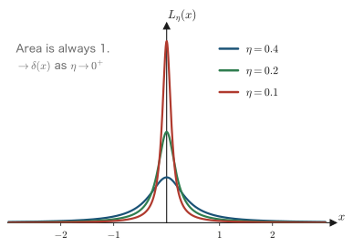
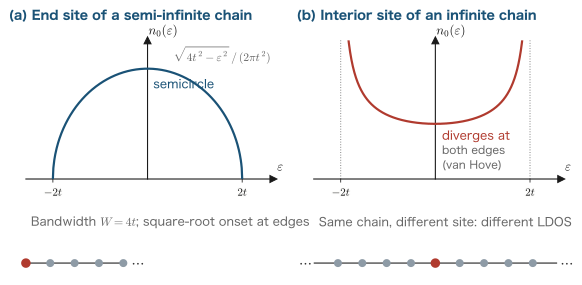
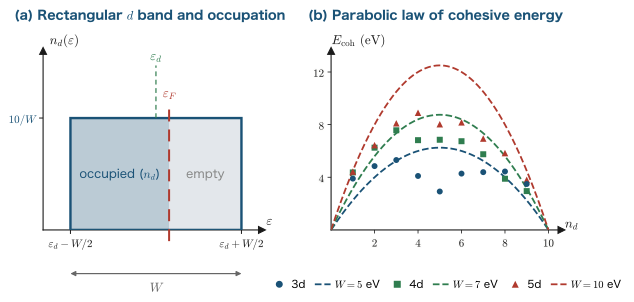
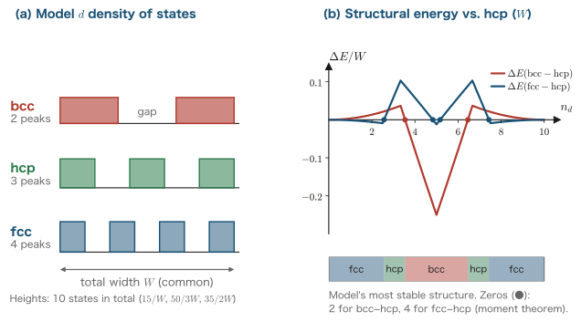

Chapter 13The Density of States and Green's Functions — The Friedel Model
In Chapter 12 we saw that electronic states in a periodic potential are classified by the wavenumber $\kk$ through Bloch's theorem and organized as the band structure $\varepsilon_\nu(\kk)$. The band structure tells us “which energy the state of each wavenumber has,” but when we discuss properties such as the cohesive energy, the stability of the crystal structure, and magnetism, the information we actually need is often much coarser: “how many states are there near the energy $\varepsilon$,” that is, the density of states (DOS). In this chapter we build a real-space, local-orbital picture in which the density of states plays the leading role. We first show that the density of states is obtained from the imaginary part of the Green's function (the resolvent), and then derive, without skipping any steps, the recursion method (Lanczos tridiagonalization and continued-fraction expansion), a practical technique for computing the Green's function. Next we prove the moments theorem, which states that “the shape of the density of states is determined by the local environment of an atom.” As its applications we discuss the Friedel model, which explains the parabolic trend of the cohesive energy of transition metals; the extended Friedel model, which explains the crystal-structure series (hcp→bcc→hcp→fcc); and Miedema's rules for the heat of formation of alloys (advanced topic). The band theory in $\kk$ space (Chapter 12) and the moments theory in real space (this chapter) are complementary languages that view the same electronic structure from different angles. In the next chapter we turn to the numerical solution of the Kohn–Sham equations, which is needed to apply these theories to real materials. In this chapter too we use Hartree atomic units ($\hbar=m_e=e=4\pi\varepsilon_0=1$, see Chapter 1), and for comparison with experimental values we use the conversion $1\ \mathrm{Hartree}=27.2114\ \mathrm{eV}$.
- The definitions of the density of states $D(\varepsilon)$ and the local density of states $n_i(\varepsilon)$, and their role as a language for describing material properties
- The spectral representation of the Green's function $\hat G(z)=(z-\hat H)^{-1}$, and the derivation of $D(\varepsilon)=-\frac{1}{\pi}\,\mathrm{Im}\,\mathrm{Tr}\,\hat G(\varepsilon+i0^+)$ by the Sokhotski–Plemelj formula
- The recursion method based on Lanczos tridiagonalization, and the complete derivation of the continued-fraction expansion of the Green's function
- A demonstration of the recursion method for a one-dimensional tight-binding chain: the local density of states at the end site is a semicircle
- The moments theorem $\mu_p=\langle u_0|\hat H^p|u_0\rangle$: the idea that the local environment determines the shape of the density of states
- The derivation of the cohesive energy $E_{\mathrm{coh}}=\frac{W}{20}n_d(10-n_d)$ from the Friedel model, and its comparison with experiment
- Understanding the crystal-structure series of transition metals and the correlation between magnetism and structure through the extended Friedel model
- (Advanced) Miedema's rules for the heat of formation of alloys and their microscopic interpretation
13.1 The Density of States and the Local Density of States
We begin by defining the density of states, the protagonist of this chapter, and summarizing its basic properties. What we consider here is the eigenvalue problem of an effective one-body Hamiltonian $\hat H$, such as that of the Kohn–Sham equations,
$$ \begin{equation} \hat H\,|n\rangle = \varepsilon_n\,|n\rangle,\qquad \langle m|n\rangle=\delta_{mn} \label{eq:13-eigen} \end{equation} $$Here $|n\rangle$ is a one-body eigenstate (for a solid, the Bloch state $|\nu\kk\rangle$ of Chapter 12), $\varepsilon_n$ is its eigenenergy, and the label $n$ runs over all one-body states including spin (for a spin-unpolarized system, each orbital level is counted twice).
Definition: Density of states (DOS) and local density of states (LDOS)
We define the density of states (DOS) of the whole system by
$$ \begin{equation} D(\varepsilon) \equiv \sum_n \delta(\varepsilon-\varepsilon_n) \label{eq:13-dos-def} \end{equation} $$We also define the local density of states (LDOS), weighted by the projection onto a normalized localized orbital $|i\rangle$ (such as an atomic orbital on atom $i$), by
$$ \begin{equation} n_i(\varepsilon) \equiv \sum_n \left|\langle i|n\rangle\right|^2 \delta(\varepsilon-\varepsilon_n) \label{eq:13-ldos-def} \end{equation} $$More generally, for an arbitrary normalized state $|\phi\rangle$, we call $n_\phi(\varepsilon)=\sum_n |\langle \phi|n\rangle|^2\delta(\varepsilon-\varepsilon_n)$ the projected density of states (PDOS). If we take the $s,p,d$ orbitals of a particular atom as $|\phi\rangle$, we obtain the orbital-decomposed PDOS.
The meaning of the definition in Eq. \eqref{eq:13-dos-def} is simple. $D(\varepsilon)\,\dd\varepsilon$ is “the number of one-body states in the energy interval $[\varepsilon,\varepsilon+\dd\varepsilon]$”; for a discrete spectrum it is a train of delta functions, and in the limit where the levels are densely distributed, as in a solid, it becomes a smooth function (Figure 13.1, left). Indeed, in Chapter 3 we derived $D(\varepsilon)\propto\sqrt{\varepsilon}$ for the free-electron gas by counting the number of states. The local density of states \eqref{eq:13-ldos-def} is this quantity multiplied by the weight $|\langle i|n\rangle|^2$, which says “how much that state lives on atom $i$” (Figure 13.1, right).
Two basic sum rules hold between the DOS and the LDOS. First, when the localized basis $\{|i\rangle\}$ forms a complete set (that is, $\sum_i |i\rangle\langle i|=\hat 1$),
$$ \begin{align} \sum_i n_i(\varepsilon) &= \sum_i \sum_n \langle n|i\rangle\langle i|n\rangle\,\delta(\varepsilon-\varepsilon_n) \label{eq:13-ldos-sum-a}\\ &= \sum_n \langle n|\Bigl(\sum_i |i\rangle\langle i|\Bigr)|n\rangle\,\delta(\varepsilon-\varepsilon_n) \label{eq:13-ldos-sum-b}\\ &= \sum_n \langle n|n\rangle\,\delta(\varepsilon-\varepsilon_n) = D(\varepsilon). \label{eq:13-ldos-sum} \end{align} $$In the first line we rewrote $|\langle i|n\rangle|^2=\langle n|i\rangle\langle i|n\rangle$; in the second line we interchanged the order of the sums so that the sum over $i$ can be carried out first (this is allowed freely since both are finite sums); and in the third line we used completeness $\sum_i|i\rangle\langle i|=\hat 1$ and normalization $\langle n|n\rangle=1$. In other words, the total DOS is distributed among the LDOS of each atom and each orbital. Second, integrating over the energy gives
$$ \begin{equation} \int_{-\infty}^{\infty} n_i(\varepsilon)\,\dd\varepsilon = \sum_n |\langle i|n\rangle|^2 = \langle i|\Bigl(\sum_n |n\rangle\langle n|\Bigr)|i\rangle = \langle i|i\rangle = 1, \label{eq:13-ldos-norm} \end{equation} $$where we used the integral of the delta function $\int \delta(\varepsilon-\varepsilon_n)\dd\varepsilon=1$ and the completeness of the eigenstates $\sum_n|n\rangle\langle n|=\hat 1$. That is, a single localized orbital distributes exactly the weight of one state along the energy axis. The LDOS is the function that describes how this weight is distributed (whether it is concentrated or spread out, and into how many peaks it splits).
Many quantities that characterize the ground-state electronic structure can be written as integrals of the DOS. At absolute zero the electrons fill the states in order from the lowest energy, so the relation between the number of electrons $N_e$ and the Fermi energy $\varepsilon_F$, and the band energy $E_{\mathrm{band}}$ (the sum of the energies of the occupied levels), are expressed as
$$ \begin{equation} N_e = \int^{\varepsilon_F} D(\varepsilon)\,\dd\varepsilon, \qquad E_{\mathrm{band}} = \sum_n^{\mathrm{occ}}\varepsilon_n = \int^{\varepsilon_F} \varepsilon\, D(\varepsilon)\,\dd\varepsilon \label{eq:13-eband} \end{equation} $$(the lower bound of the integral is the bottom of the spectrum). The second equality is nothing other than substituting the definition \eqref{eq:13-dos-def} and carrying out the integral of the delta function, $\int^{\varepsilon_F}\varepsilon\sum_n\delta(\varepsilon-\varepsilon_n)\dd\varepsilon=\sum_n^{\varepsilon_n\le\varepsilon_F}\varepsilon_n$. Eq. \eqref{eq:13-eband} will be the starting point of the Friedel model in the second half of this chapter.
Physical Meaning: The DOS as a language for describing material properties
The band structure $\varepsilon_\nu(\kk)$ is the most detailed information, but it is a collection of cross sections drawn along each direction of $\kk$, and it is difficult to read off directly from it “whether the bonding is strong” or “whether magnetism appears.” The DOS, on the other hand, discards the information on $\kk$ and keeps only the “number of states per energy,” and
- Cohesion: the band energy \eqref{eq:13-eband} is determined by the centroid of the occupied DOS. The more weight the DOS has on the low-energy side, the stronger the bonding (Section 13.6).
- Structural stability: a structure in which the Fermi level falls in a valley (dip) of the DOS gains energy (Section 13.7).
- Magnetism: the larger the DOS at the Fermi level, $D(\varepsilon_F)$, the more readily ferromagnetism appears (the Stoner condition).
—the correspondence with material properties is thus direct. Moreover, the LDOS is an experimentally meaningful quantity, related to the differential conductance in scanning tunneling microscopy (STM) and to the intensity in photoelectron spectroscopy. This chapter begins by establishing the grammar of this “language of the DOS.”
Now, if we try to actually compute the definitions \eqref{eq:13-dos-def} and \eqref{eq:13-ldos-def}, it seems that all the eigenvalues and eigenvectors are needed. Surprisingly, however, there is a way to compute the LDOS directly, without any diagonalization at all. The key is the Green's function.
13.2 Green's Functions and the Density of States
In this section we define the Green's function (the resolvent) and show that its imaginary part is the density of states itself, after carefully proving the Lorentzian representation of the delta function. This is the technical foundation of the entire chapter.
13.2.1 Definition of the resolvent and its spectral representation
Definition: Green's function (resolvent)
When a complex number $z$ does not coincide with an eigenvalue of $\hat H$, the operator $z\hat 1-\hat H$ has an inverse. This inverse operator
$$ \begin{equation} \hat G(z) \equiv (z\hat 1-\hat H)^{-1}, \qquad (z\hat 1-\hat H)\,\hat G(z)=\hat G(z)\,(z\hat 1-\hat H)=\hat 1 \label{eq:13-resolvent} \end{equation} $$is called the (one-body) Green's function or the resolvent. Here $z$ is a complex energy variable.
We now show that $\hat G(z)$ can be written explicitly in terms of the eigenstates (the spectral representation). As a candidate, consider
$$ \begin{equation} \hat G_{\mathrm{trial}}(z) = \sum_n \frac{|n\rangle\langle n|}{z-\varepsilon_n} \label{eq:13-gtrial} \end{equation} $$and check directly that it satisfies the defining relation Eq. \eqref{eq:13-resolvent}.
$$ \begin{align} (z\hat 1-\hat H)\,\hat G_{\mathrm{trial}}(z) &= (z\hat 1-\hat H)\sum_n \frac{|n\rangle\langle n|}{z-\varepsilon_n} \label{eq:13-spec-a}\\ &= \sum_n \frac{\bigl(z|n\rangle-\hat H|n\rangle\bigr)\langle n|}{z-\varepsilon_n} \label{eq:13-spec-b}\\ &= \sum_n \frac{(z-\varepsilon_n)\,|n\rangle\langle n|}{z-\varepsilon_n} \label{eq:13-spec-c}\\ &= \sum_n |n\rangle\langle n| = \hat 1. \label{eq:13-spec-d} \end{align} $$In going from the first line to the second, we took the operator $(z\hat 1-\hat H)$ inside the sum, using the fact that it acts only on the ket $|n\rangle$ of each term (this is allowed because the sum is a sum over the number of states and the operator is linear). In going from the second line to the third, we used the eigenvalue equation $\hat H|n\rangle=\varepsilon_n|n\rangle$. In going from the third line to the fourth, we cancelled the factor $(z-\varepsilon_n)$ in the numerator and denominator, which is possible as long as $z\ne\varepsilon_n$, and finally used the completeness of the eigenstates, $\sum_n|n\rangle\langle n|=\hat 1$. The product in the opposite order, $\hat G_{\mathrm{trial}}(z-\hat H)$, also gives $\hat 1$ by exactly the same calculation. Since the inverse operator is unique (if $\hat A\hat B=\hat B\hat A=\hat 1$ and $\hat A\hat C=\hat C\hat A=\hat 1$, then $\hat C=\hat C\hat A\hat B=\hat B$), the following spectral representation has been established:
$$ \begin{equation} \hat G(z) = \sum_n \frac{|n\rangle\langle n|}{z-\varepsilon_n}. \label{eq:13-gspec} \end{equation} $$Taking the diagonal matrix element in a localized orbital $|i\rangle$, we obtain
$$ \begin{equation} G_{ii}(z) \equiv \langle i|\hat G(z)|i\rangle = \sum_n \frac{\langle i|n\rangle\langle n|i\rangle}{z-\varepsilon_n} = \sum_n \frac{|\langle i|n\rangle|^2}{z-\varepsilon_n}. \label{eq:13-gii} \end{equation} $$Comparing this expression with the definition of the LDOS, Eq. \eqref{eq:13-ldos-def}, we see that both carry the information of “the sequence of levels $\varepsilon_n$ with weights $|\langle i|n\rangle|^2$.” The difference is that the LDOS is a sequence of delta functions, whereas $G_{ii}(z)$ is a sequence of poles in the $z$ plane. What connects the two is the following Lorentzian representation of the delta function.
13.2.2 The Lorentzian representation of the delta function and the Sokhotski–Plemelj formula
We now evaluate the Green's function just above the real axis, $z=\varepsilon+i\eta$ ($\eta$ is a small positive number), and show that a delta function appears in the limit $\eta\to 0^+$. We first compute with a single pole, $g(z)=1/(z-\varepsilon_0)$ ($\varepsilon_0$ is a real number). Multiplying the numerator and denominator by the complex conjugate of the denominator and separating the real and imaginary parts, we have
$$ \begin{align} g(\varepsilon+i\eta) &= \frac{1}{(\varepsilon-\varepsilon_0)+i\eta} \label{eq:13-lor-a}\\ &= \frac{(\varepsilon-\varepsilon_0)-i\eta}{\bigl[(\varepsilon-\varepsilon_0)+i\eta\bigr]\bigl[(\varepsilon-\varepsilon_0)-i\eta\bigr]} \label{eq:13-lor-b}\\ &= \frac{\varepsilon-\varepsilon_0}{(\varepsilon-\varepsilon_0)^2+\eta^2} \;-\; i\,\frac{\eta}{(\varepsilon-\varepsilon_0)^2+\eta^2}. \label{eq:13-lorentz} \end{align} $$In going from the first line to the second, we multiplied the numerator and denominator by $(\varepsilon-\varepsilon_0)-i\eta$, and in going from the second line to the third, we used $(a+ib)(a-ib)=a^2+b^2$ in the denominator. The function appearing in the imaginary part,
$$ \begin{equation} L_\eta(x) \equiv \frac{1}{\pi}\,\frac{\eta}{x^2+\eta^2} \label{eq:13-lor-def} \end{equation} $$($x=\varepsilon-\varepsilon_0$), is called the Lorentzian function. It has a peak of width $\eta$ at $x=0$, which becomes sharper and taller as $\eta$ is decreased (Figure 13.2). Let us show that it converges to the delta function.
Derivation: The delta-function limit of the Lorentzian function $\lim_{\eta\to0^+}L_\eta(x)=\delta(x)$
Step 1 (the area is always 1). First we compute the total integral. With the change of variables $x=\eta\tan\theta$, we have $\dd x=\eta\sec^2\theta\,\dd\theta$ and $x^2+\eta^2=\eta^2\tan^2\theta+\eta^2=\eta^2\sec^2\theta$, and $x:-\infty\to\infty$ corresponds to $\theta:-\pi/2\to\pi/2$, so
$$ \begin{align} \int_{-\infty}^{\infty} L_\eta(x)\,\dd x &= \frac{1}{\pi}\int_{-\infty}^{\infty}\frac{\eta}{x^2+\eta^2}\,\dd x \label{eq:13-lnorm-a}\\ &= \frac{1}{\pi}\int_{-\pi/2}^{\pi/2}\frac{\eta}{\eta^2\sec^2\theta}\,\eta\sec^2\theta\,\dd\theta \label{eq:13-lnorm-b}\\ &= \frac{1}{\pi}\int_{-\pi/2}^{\pi/2}\dd\theta = \frac{1}{\pi}\cdot\pi = 1. \label{eq:13-lorentz-norm} \end{align} $$In the second line we substituted the change of variables, and in the third line $\eta^2\sec^2\theta$ cancelled between the denominator and the numerator, so that the integrand became the constant $1$. The area is always 1, independent of $\eta$.
Step 2 (it collapses to 0 away from the peak). Fix $x\ne0$. Then $L_\eta(x)=\dfrac{\eta}{\pi(x^2+\eta^2)}\le\dfrac{\eta}{\pi x^2}\xrightarrow{\eta\to0^+}0$. On the other hand, at $x=0$ we have $L_\eta(0)=\dfrac{1}{\pi\eta}\to\infty$. In other words, all of the weight becomes concentrated at the origin.
Step 3 (convergence against a test function). The definition of the delta function was “for any smooth bounded function $f$, $\int f(x)\delta(x)\dd x=f(0)$.” We therefore examine the limit of $\int f L_\eta\,\dd x$. With the change of variables $x=\eta u$ ($\dd x=\eta\,\dd u$), we obtain
$$ \begin{align} \int_{-\infty}^{\infty} f(x)\,L_\eta(x)\,\dd x &= \frac{1}{\pi}\int_{-\infty}^{\infty} f(\eta u)\,\frac{\eta}{\eta^2u^2+\eta^2}\,\eta\,\dd u \label{eq:13-ltest-a}\\ &= \frac{1}{\pi}\int_{-\infty}^{\infty} \frac{f(\eta u)}{1+u^2}\,\dd u. \label{eq:13-ltest-b} \end{align} $$In the first line we substituted the change of variables, and in the second line we cancelled $\eta^2$ between the denominator and the numerator (note that $\eta$ does not disappear from the integral completely but remains only in the argument of $f$). As $\eta\to0^+$, $f(\eta u)\to f(0)$ (for each $u$), and the integrand is bounded from above, independently of $u$, by the integrable function $\max|f|/(1+u^2)$, so the limit and the integral may be interchanged (dominated convergence). Hence
$$ \begin{equation} \lim_{\eta\to0^+}\int f(x)L_\eta(x)\,\dd x = \frac{f(0)}{\pi}\int_{-\infty}^{\infty}\frac{\dd u}{1+u^2} = \frac{f(0)}{\pi}\cdot\pi = f(0). \label{eq:13-ltest-c} \end{equation} $$The last integral equals $\pi$ by the same substitution $u=\tan\theta$ as in Step 1. This is precisely the definition of the delta function, and $L_\eta\to\delta$ has been proved.

We also need to define the limit of the real part. The real part $x/(x^2+\eta^2)$ of Eq. \eqref{eq:13-lorentz} approaches $1/x$ as $\eta\to0^+$, but care is needed in integrals that straddle the singular point at $x=0$. This limit becomes an operation called the Cauchy principal value.
Math Note: The Cauchy principal value
The integral of a function that diverges at the origin, such as $1/x$, becomes finite if it is defined as the limit in which the singular point is avoided symmetrically,
$$ \begin{equation} \mathrm{P}\!\int_{-\infty}^{\infty}\frac{f(x)}{x}\,\dd x \equiv \lim_{\delta\to0^+}\left[\int_{-\infty}^{-\delta}\frac{f(x)}{x}\,\dd x+\int_{\delta}^{\infty}\frac{f(x)}{x}\,\dd x\right] \label{eq:13-pv-def} \end{equation} $$(the symbol $\mathrm{P}$). The seed of the divergence is the contribution of $f(0)/x$ near $x=0$, but this is an odd function, so if it is cut off symmetrically on the left and right, the two contributions cancel each other. Indeed, splitting $f(x)=f(0)+[f(x)-f(0)]$ for $|x|\lt\delta$, the integral of the first term vanishes because it is an odd function, and for the second term the integrand is bounded, since $|f(x)-f(0)|\le C|x|$ (for smooth $f$), so it vanishes as $\delta\to0$. For the same reason, for the real part with $\eta$ we also have $$ \int_{-\infty}^{\infty} f(x)\,\frac{x}{x^2+\eta^2}\,\dd x \xrightarrow{\eta\to0^+} \mathrm{P}\!\int_{-\infty}^{\infty}\frac{f(x)}{x}\,\dd x $$ The structure is the same: in the region $|x|\gt\delta$, $x/(x^2+\eta^2)\to1/x$ uniformly, while in the region $|x|\lt\delta$ the integrand has the form of the odd function $x/(x^2+\eta^2)$ times $[f(0)+O(x)]$, so the $f(0)$ term vanishes by symmetry.
Summarizing the above, we obtain the following formula.
Theorem: The Sokhotski–Plemelj formula
As a function (distribution) of the real number $x$,
$$ \begin{equation} \lim_{\eta\to0^+}\frac{1}{x\pm i\eta} = \mathrm{P}\,\frac{1}{x} \mp i\pi\,\delta(x). \label{eq:13-sp} \end{equation} $$That is, when the pole is bypassed from above (below) the real axis, the result is the sum of the principal value and the delta function $\times(\mp i\pi)$.
Proof: This follows from the decomposition $\dfrac{1}{x\pm i\eta}=\dfrac{x}{x^2+\eta^2}\mp i\,\dfrac{\eta}{x^2+\eta^2}$ of Eq. \eqref{eq:13-lorentz}, from the fact that the limit of the real part is the principal value (Math Note), and from the fact that the imaginary part satisfies $\dfrac{\eta}{x^2+\eta^2}=\pi L_\eta(x)\to\pi\delta(x)$ (the derivation box above). ∎
13.2.3 The density of states is the imaginary part of the Green's function
The preparation is complete. Substituting $z=\varepsilon+i0^+$ (meaning the limit just above the real axis) into the spectral representation Eq. \eqref{eq:13-gii} and applying the Sokhotski–Plemelj formula Eq. \eqref{eq:13-sp} with $x=\varepsilon-\varepsilon_n$, we obtain
$$ \begin{align} G_{ii}(\varepsilon+i0^+) &= \sum_n |\langle i|n\rangle|^2\,\lim_{\eta\to0^+}\frac{1}{(\varepsilon-\varepsilon_n)+i\eta} \label{eq:13-giieps-a}\\ &= \sum_n |\langle i|n\rangle|^2\left[\mathrm{P}\,\frac{1}{\varepsilon-\varepsilon_n} - i\pi\,\delta(\varepsilon-\varepsilon_n)\right]. \label{eq:13-giieps} \end{align} $$Taking the imaginary part, since the coefficient $|\langle i|n\rangle|^2$ is real, we have
$$ \begin{equation} \mathrm{Im}\,G_{ii}(\varepsilon+i0^+) = -\pi\sum_n |\langle i|n\rangle|^2\,\delta(\varepsilon-\varepsilon_n) = -\pi\,n_i(\varepsilon), \label{eq:13-img} \end{equation} $$where we used the definition of the LDOS, Eq. \eqref{eq:13-ldos-def}, as it stands. Moreover, since the trace does not depend on the choice of basis, evaluating it in the eigenbasis gives $\mathrm{Tr}\,\hat G(z)=\sum_n\langle n|\hat G(z)|n\rangle=\sum_n \frac{1}{z-\varepsilon_n}$, and taking the imaginary part in the same way yields the total DOS. We summarize the results:
Thus the calculation of the density of states has been reduced to the calculation of the diagonal elements of the Green's function. Instead of solving the eigenvalue problem, it suffices to find just a single diagonal element $G_{ii}$ of the inverse matrix. In the next section we derive a method (the recursion method) for computing this diagonal element efficiently and in a physically transparent form.
Physical Meaning: A small imaginary part is a blurring
If $\eta$ in $z=\varepsilon+i\eta$ is kept finite, then, as is clear from the derivation of Eq. \eqref{eq:13-img}, the delta function of each level is replaced by a Lorentzian function of width $\eta$. That is, $-\frac{1}{\pi}\mathrm{Im}\,G_{ii}(\varepsilon+i\eta)$ is “the LDOS blurred with width $\eta$.” The smearing used when drawing a smooth DOS curve in a numerical calculation is precisely this operation. In many-body theory, moreover, the imaginary part of the self-energy (the finite lifetime) enters in the place of $\eta$, and the peak width of the spectral function gives the inverse of the quasiparticle lifetime. The “Lorentzian function of area 1” proved here is the prototype of that.
13.3 The Recursion Method: Lanczos Tridiagonalization and Continued-Fraction Expansion
In the previous section, the calculation of the density of states was reduced to the calculation of the diagonal element of the Green's function, $G_{ii}(z)=\langle i|(z-\hat H)^{-1}|i\rangle$. However, $\hat G(z)$ is an inverse operator, and naively we would have to invert the whole huge matrix $(z\hat 1-\hat H)$. This takes no less effort than diagonalization. Here we change our point of view. If the matrix has a special form, perhaps a single diagonal element of its inverse can be written down very easily. Indeed, if the matrix is tridiagonal (only the diagonal and the two subdiagonals immediately next to it are nonzero), the $(0,0)$ component of $(z-T)^{-1}$ can be expressed in a closed form called a continued fraction. The problem is thus replaced by the question: “Can we change the basis cleverly so that $\hat H$ becomes tridiagonal?” Lanczos tridiagonalization does exactly this, and the method of electronic-structure calculation that combines it with the Green's function is called the recursion method (Haydock, Heine, Kelly 1972).
13.3.1 The requirement of tridiagonalization and the three-term recurrence relation
Definition: Tridiagonalized basis
An orthonormal set $\{|u_n\rangle\}_{n=0,1,2,\dots}$ is said to tridiagonalize $\hat H$ if
$$ \begin{equation} \langle u_m|\hat H|u_n\rangle = 0 \qquad (\abs{m-n}\ge 2) \label{eq:13-lz-tridiag} \end{equation} $$holds. We then give names to the nonzero matrix elements and write
$$ \begin{equation} a_n \equiv \langle u_n|\hat H|u_n\rangle, \qquad b_{n+1} \equiv \langle u_{n+1}|\hat H|u_n\rangle \label{eq:13-lz-coef} \end{equation} $$Since $\hat H$ is Hermitian, $a_n$ is real. In the construction below, $b_{n+1}$ can be chosen to be a real positive number. We call $\{|u_n\rangle\}$ the recursion vectors (or Lanczos vectors) and $a_n,b_n$ the recursion coefficients.
First, assuming that a tridiagonalized basis exists, we write down the relation that it must satisfy. Since $\{|u_n\rangle\}$ is a complete orthonormal set, any vector can be expanded as $|\psi\rangle=\sum_m|u_m\rangle\langle u_m|\psi\rangle$. Applying this to $|\psi\rangle=\hat H|u_n\rangle$ gives
$$ \begin{align} \hat H|u_n\rangle &= \sum_m |u_m\rangle\,\langle u_m|\hat H|u_n\rangle \label{eq:13-lz-exp-a}\\ &= |u_{n-1}\rangle\,\langle u_{n-1}|\hat H|u_n\rangle + |u_n\rangle\,\langle u_n|\hat H|u_n\rangle + |u_{n+1}\rangle\,\langle u_{n+1}|\hat H|u_n\rangle \label{eq:13-lz-exp-b}\\ &= b_n\,|u_{n-1}\rangle + a_n\,|u_n\rangle + b_{n+1}\,|u_{n+1}\rangle . \label{eq:13-lz-three} \end{align} $$The first line is nothing but the insertion of completeness. In the second line, the tridiagonal condition \eqref{eq:13-lz-tridiag} makes all terms with $\abs{m-n}\ge2$ vanish, so only the three terms $m=n-1,n,n+1$ remain. In the third line we substituted the definitions in \eqref{eq:13-lz-coef}. Note, however, that $\langle u_{n-1}|\hat H|u_n\rangle$ is the complex conjugate $\overline{b_n}$ of $b_n$; anticipating that $b_n$ is real, we wrote it as $b_n$ (this point is guaranteed by the construction below).
Solving Eq. \eqref{eq:13-lz-three} for $|u_{n+1}\rangle$, we obtain
which is a three-term recurrence relation. This is not merely a relation: it can be read directly as an algorithm. The right-hand side can be computed from $|u_{n-1}\rangle$ and $|u_n\rangle$ alone, so the left-hand side, that is, the next vector, is determined. Moreover, $b_{n+1}$ is fixed automatically as a “normalization constant.” Since $|u_{n+1}\rangle$ should be normalized, the norm of the right-hand side is itself $b_{n+1}$.
Algorithm: The recursion (Lanczos) method
Take the localized orbital of interest as the starting vector $|u_0\rangle$ ($\langle u_0|u_0\rangle=1$). For convenience, we set $|u_{-1}\rangle\equiv 0$ and $b_0\equiv 0$. For $n=0,1,2,\dots$, repeat the following.
- Compute $\hat H|u_n\rangle$ (one product of a sparse matrix and a vector).
- Compute $a_n = \langle u_n|\hat H|u_n\rangle$.
- Form the residual vector $|r_n\rangle = \hat H|u_n\rangle - a_n|u_n\rangle - b_n|u_{n-1}\rangle$.
- Set $b_{n+1} = \sqrt{\langle r_n|r_n\rangle}$ (by definition a real non-negative number).
- If $b_{n+1}\ne 0$, let $|u_{n+1}\rangle = |r_n\rangle/b_{n+1}$. If $b_{n+1}=0$, terminate the iteration.
All that is needed is the product of $\hat H$ and a vector; neither diagonalization nor inversion of a matrix appears. If $\hat H$ is sparse (the number of coupling partners per $1$ site is finite), the computational cost of one step is proportional to the size $N$ of the system.
One point needs to be checked here. The algorithm above merely adopted the recurrence relation \eqref{eq:13-lz-recur} as a definition, and there is not yet any guarantee that the vectors constructed in this way really form an orthonormal set. Remarkably, however, the generated vectors are automatically orthogonal to one another, even though no orthogonalization procedure (such as the Gram–Schmidt method) is carried out explicitly. This is the heart of the Lanczos method. We prove it next by induction.
13.3.2 Proof of the orthogonality of the generated vectors
Theorem: Orthonormality of the recursion vectors
Let $\hat H$ be a Hermitian operator and $|u_0\rangle$ a normalized vector, and suppose that $|u_0\rangle,|u_1\rangle,\dots,|u_{n+1}\rangle$ have been generated by the algorithm above (with $b_1,\dots,b_{n+1}$ all positive). Then
$$ \begin{equation} \langle u_k|u_l\rangle = \delta_{kl}\qquad (0\le k,l\le n+1) \label{eq:13-lz-ortho} \end{equation} $$holds, and $\hat H$ is tridiagonal on this basis.
Derivation: Proof of orthogonality by induction
The inductive statement. Let $P(n)$ be the following statement: “$|u_0\rangle,\dots,|u_n\rangle$ form an orthonormal set, and for $0\le m\le n-1$
$$ \begin{equation} \hat H|u_m\rangle = b_m|u_{m-1}\rangle + a_m|u_m\rangle + b_{m+1}|u_{m+1}\rangle \label{eq:13-lz-ind-hyp} \end{equation} $$holds.” Equation \eqref{eq:13-lz-ind-hyp} is just Steps 3 and 5 of the algorithm with terms moved to the other side, so it is automatically correct as long as $|u_{m+1}\rangle$ has been generated. What really has to be shown is therefore the orthonormality.
Base case $P(0)$. We assumed that $|u_0\rangle$ is normalized, so $\langle u_0|u_0\rangle=1$. The orthogonality of a single vector is trivial.
Inductive step. Assume $P(n)$ and show $P(n+1)$, that is, that $|u_{n+1}\rangle$ is orthogonal to all of $|u_0\rangle,\dots,|u_n\rangle$ and is normalized. Since $|u_{n+1}\rangle=|r_n\rangle/b_{n+1}$ with $b_{n+1}\gt0$, it suffices to show that $|r_n\rangle$ is orthogonal to $|u_m\rangle$ ($m\le n$).
(i) The case $m=n$.
$$ \begin{align} \langle u_n|r_n\rangle &= \langle u_n|\hat H|u_n\rangle - a_n\langle u_n|u_n\rangle - b_n\langle u_n|u_{n-1}\rangle \label{eq:13-lz-o1-a}\\ &= a_n - a_n\cdot 1 - b_n\cdot 0 = 0 . \label{eq:13-lz-o1-b} \end{align} $$The first line is simply the definition of $|r_n\rangle$ multiplied by $\langle u_n|$. In the second line, we used the definition \eqref{eq:13-lz-coef} of $a_n$ for the first term, the normalization $\langle u_n|u_n\rangle=1$ for the second term, and $\langle u_n|u_{n-1}\rangle=0$, which follows from the inductive hypothesis (orthonormality), for the third term. In other words, defining $a_n$ as the diagonal element of $\hat H$ is itself the operation that removes the $|u_n\rangle$ component from $|r_n\rangle$.
(ii) The case $m=n-1$.
$$ \begin{align} \langle u_{n-1}|r_n\rangle &= \langle u_{n-1}|\hat H|u_n\rangle - a_n\langle u_{n-1}|u_n\rangle - b_n\langle u_{n-1}|u_{n-1}\rangle \label{eq:13-lz-o2-a}\\ &= \langle u_{n-1}|\hat H|u_n\rangle - 0 - b_n . \label{eq:13-lz-o2-b} \end{align} $$Here too we used $\langle u_{n-1}|u_n\rangle=0$ and $\langle u_{n-1}|u_{n-1}\rangle=1$ from the inductive hypothesis. We now evaluate the remaining first term. By the Hermiticity of $\hat H$, $\langle u_{n-1}|\hat H|u_n\rangle=\overline{\langle u_n|\hat H|u_{n-1}\rangle}$, and using the inductive hypothesis \eqref{eq:13-lz-ind-hyp} for $m=n-1$ gives
$$ \begin{align} \langle u_n|\hat H|u_{n-1}\rangle &= b_{n-1}\langle u_n|u_{n-2}\rangle + a_{n-1}\langle u_n|u_{n-1}\rangle + b_n\langle u_n|u_n\rangle \label{eq:13-lz-o3-a}\\ &= 0 + 0 + b_n = b_n . \label{eq:13-lz-o3-b} \end{align} $$Since $|u_{n-2}\rangle,|u_{n-1}\rangle,|u_n\rangle$ are all elements of the orthonormal set guaranteed by $P(n)$, the first two terms vanish. Because $b_n$ is a real positive number defined as a norm, it is unchanged by complex conjugation, and $\langle u_{n-1}|\hat H|u_n\rangle=b_n$. Substituting this back into \eqref{eq:13-lz-o2-b} gives $\langle u_{n-1}|r_n\rangle = b_n-b_n=0$. We see that the operation of subtracting $b_n|u_{n-1}\rangle$ removes exactly the component along the immediately preceding vector. Incidentally, the present calculation also confirms that the matrix element defined as $b_{n}$ in \eqref{eq:13-lz-coef} coincides with the $b_n$ fixed as a norm in the algorithm.
(iii) The case $m\le n-2$. Here is the answer to “Why is it enough to subtract only two vectors?”
$$ \begin{align} \langle u_m|r_n\rangle &= \langle u_m|\hat H|u_n\rangle - a_n\langle u_m|u_n\rangle - b_n\langle u_m|u_{n-1}\rangle \label{eq:13-lz-o4-a}\\ &= \langle u_m|\hat H|u_n\rangle \label{eq:13-lz-o4-b}\\ &= \overline{\langle u_n|\hat H|u_m\rangle} \label{eq:13-lz-o4-c}\\ &= \overline{\;b_m\langle u_n|u_{m-1}\rangle + a_m\langle u_n|u_m\rangle + b_{m+1}\langle u_n|u_{m+1}\rangle\;} \label{eq:13-lz-o4-d}\\ &= \overline{0+0+0} = 0 . \label{eq:13-lz-o4-e} \end{align} $$In the second line we used $\langle u_m|u_n\rangle=\langle u_m|u_{n-1}\rangle=0$ (the orthogonality of $P(n)$), which holds because $m\le n-2\lt n-1\lt n$. The third line is the Hermiticity, and the fourth line is the inductive hypothesis \eqref{eq:13-lz-ind-hyp} applied to $\hat H|u_m\rangle$. In the last line, the indices that appear satisfy $m-1,m,m+1\le n-1$, and all of them differ from $n$, so all the inner products vanish by the orthogonality of $P(n)$.
Normalization and conclusion. By (i), (ii), and (iii), $|r_n\rangle$ is orthogonal to all of $|u_0\rangle,\dots,|u_n\rangle$. The vector $|u_{n+1}\rangle$, obtained by dividing by $b_{n+1}=\sqrt{\langle r_n|r_n\rangle}$, obviously satisfies $\langle u_{n+1}|u_{n+1}\rangle=1$, so $P(n+1)$ has been shown. By induction, all the generated vectors form an orthonormal set. ∎
Tridiagonality. Multiplying \eqref{eq:13-lz-ind-hyp} shown above (that is, the fact that $\hat H|u_n\rangle$ is a linear combination of only the three vectors $|u_{n-1}\rangle,|u_n\rangle,|u_{n+1}\rangle$) by $\langle u_m|$ from the left, we obtain $\langle u_m|\hat H|u_n\rangle=0$ for $\abs{m-n}\ge2$. This is precisely the tridiagonal condition \eqref{eq:13-lz-tridiag}. ∎
What was essential in this proof is the point in (iii) that “$\hat H|u_m\rangle$ reaches only as far as $|u_{m+1}\rangle$.” If $m+1\le n-1$, it does not reach $|u_n\rangle$. Hence the orthogonality to vectors in the distant past holds automatically, and it suffices to subtract explicitly only the two immediately preceding vectors ($|u_n\rangle$ and $|u_{n-1}\rangle$). This is an economical structure that arises from the combination of Hermiticity and the three-term recurrence relation.
Math Note: Krylov subspaces and termination of the iteration
Using the recurrence relation \eqref{eq:13-lz-recur} repeatedly, we find that $|u_n\rangle$ is a linear combination of $|u_0\rangle,\hat H|u_0\rangle,\hat H^2|u_0\rangle,\dots,\hat H^n|u_0\rangle$ (indeed, $|u_1\rangle$ is a combination of $\hat H|u_0\rangle$ and $|u_0\rangle$, and $|u_2\rangle$ contains $\hat H|u_1\rangle$ and hence contains up to $\hat H^2|u_0\rangle$, and so on by induction). This ($n+1$)-dimensional space
$$ \mathcal K_n(\hat H,|u_0\rangle) \equiv \mathrm{span}\{|u_0\rangle,\hat H|u_0\rangle,\dots,\hat H^{n}|u_0\rangle\} $$is called the Krylov subspace. The Lanczos method is nothing but the procedure of orthonormalizing the natural basis $\{\hat H^k|u_0\rangle\}$ of the Krylov subspace (which, as it stands, is so strongly nonorthogonal as to be numerically useless).
If $b_{n+1}=0$, then $|r_n\rangle=0$, which means that $\hat H|u_n\rangle$ can be expressed using only the existing vectors, and $\mathcal K_n$ becomes an invariant subspace closed under $\hat H$. The iteration then ends after a finite number of steps, and the tridiagonal matrix has exactly finite size. In a finite-dimensional system, this always happens at the latest at $n=N-1$ ($N$ is the dimension of the space).
In actual numerical calculations, it is known that rounding errors gradually destroy the orthogonality of the generated vectors as the iteration proceeds (this phenomenon and ways to deal with it have been analyzed in detail by Paige and coworkers). In the recursion method, however, often only the low-order values of the coefficients $a_n,b_n$ are needed, and, as we will see later, the low-order coefficients correspond to the low-order moments, that is, to information on the neighborhood environment of an atom, so in practice sufficient accuracy is often obtained with a few tens of steps.
Physical Meaning: Mapping the lattice onto a semi-infinite chain
Let us take the starting vector to be the localized orbital of atom $0$, $|u_0\rangle=|0\rangle$. Since $\hat H$ represents hopping between neighboring atoms, $\hat H|u_0\rangle$ has amplitude only on the nearest-neighbor atoms of $0$. Therefore $|u_1\rangle$ is a (normalized) superposition of orbitals spread over the first-neighbor shell. Similarly, $|u_2\rangle$ extends up to the second-neighbor shell, and $|u_n\rangle$ up to the $n$th-neighbor shell. That is, each step of the recursion builds a concentric “shell” extending one step farther outward from atom $0$ (Figure 13.3, left).
On this basis $\hat H$ is tridiagonal, that is, it takes the form of “a one-dimensional chain in which only adjacent shells are coupled” (Figure 13.3, right). However complicated the original crystal may be in three dimensions, the electronic structure seen from the single orbital of interest is completely equivalent to a semi-infinite one-dimensional chain with on-site energies $a_n$ and hoppings $b_n$. Moreover, $a_n,b_n$ are determined only by the “local environment within $n$ steps.” As we will see in Section 13.5, this is the most direct expression of the central proposition of this chapter, that “the shape of the density of states is determined by the local environment of an atom.”
13.3.3 The Green's function of a tridiagonal matrix becomes a continued fraction
Now we come to the main point. Assuming that the tridiagonalization has been carried out, let us find the diagonal element of the Green's function. First we tidy up the notation. The space spanned by $\{|u_n\rangle\}$ (the Krylov space) is invariant under $\hat H$, and $|u_0\rangle$ lies in it. Therefore $(z-\hat H)^{-1}|u_0\rangle$ also stays within this space. Hence, to compute $G_{00}(z)=\langle u_0|(z-\hat H)^{-1}|u_0\rangle$, we only need to consider the matrix of $\hat H$ restricted to this space, that is, the tridiagonal matrix
$$ \begin{equation} T = \begin{pmatrix} a_0 & b_1 & 0 & 0 &\cdots\\ b_1 & a_1 & b_2 & 0 &\cdots\\ 0 & b_2 & a_2 & b_3 &\cdots\\ 0 & 0 & b_3 & a_3 &\cdots\\ \vdots&\vdots&\vdots&\vdots&\ddots \end{pmatrix} \label{eq:13-cf-T} \end{equation} $$What we want is $G_{00}(z)=\bigl[(z I-T)^{-1}\bigr]_{00}$.
We find it without invoking a "formula for the inverse matrix," by simply solving simultaneous linear equations. The 0th column of the inverse matrix is nothing but the solution $\bm x$ of the equation
$$ \begin{equation} (zI-T)\,\bm{x} = \bm{e}_0, \qquad \bm{e}_0=(1,0,0,\dots)^{\mathsf T} \label{eq:13-cf-linsys} \end{equation} $$(since $\bm x=(zI-T)^{-1}\bm e_0$, its 0th component $x_0$ is exactly $[(zI-T)^{-1}]_{00}=G_{00}(z)$). Writing Eq. \eqref{eq:13-cf-linsys} out in components, only three terms appear in each row because $T$ is tridiagonal:
$$ \begin{align} (z-a_0)\,x_0 - b_1 x_1 &= 1 &&(\text{the }0\text{th row}) \label{eq:13-cf-row0}\\ -b_n x_{n-1} + (z-a_n)\,x_n - b_{n+1}x_{n+1} &= 0 &&(\text{row }n\ge1\text{ }) \label{eq:13-cf-rown} \end{align} $$Now we focus on the subsystem consisting only of the rows with $n\ge1$. It has the form of the equations for "the subchain made of sites $1,2,3,\dots$," with $x_0$ entering as an external source. Indeed, moving $-b_1x_0$ to the right-hand side in the row $n=1$, we obtain
$$ \begin{equation} (z-a_1)x_1 - b_2x_2 = b_1x_0, \qquad -b_nx_{n-1}+(z-a_n)x_n-b_{n+1}x_{n+1}=0\ \ (n\ge2) \label{eq:13-cf-sub} \end{equation} $$This is a system of simultaneous equations whose coefficient matrix is $zI-T^{(1)}$ for the subchain $\{1,2,3,\dots\}$ ($T^{(1)}$ is the tridiagonal matrix obtained from $T$ by removing the 0th row and 0th column) and whose right-hand-side vector is $b_1x_0\,\bm e_0^{(1)}$ (nonzero only at the first site of the subchain). Hence its solution can be written as
$$ \begin{equation} \bm{y}=(y_1,y_2,\dots)^{\mathsf T} = b_1 x_0\,\bigl(zI-T^{(1)}\bigr)^{-1}\bm{e}_0^{(1)}, \qquad y_n\equiv x_n\ (n\ge1) \label{eq:13-cf-sol} \end{equation} $$In particular, the first component is
$$ \begin{equation} x_1 = b_1x_0\,\bigl[(zI-T^{(1)})^{-1}\bigr]_{00} \equiv b_1x_0\,g_1(z) \label{eq:13-cf-x1} \end{equation} $$Here $g_1(z)$ is "the Green's function of the first site of the subchain starting from site 1." In the same notation we write $g_0(z)\equiv G_{00}(z)=x_0$.
All that remains is to substitute Eq. \eqref{eq:13-cf-x1} into the 0th row, Eq. \eqref{eq:13-cf-row0}:
$$ \begin{align} 1 &= (z-a_0)x_0 - b_1\bigl(b_1x_0\,g_1\bigr) \label{eq:13-cf-sub-a}\\ &= \bigl[\,z-a_0-b_1^2\,g_1(z)\,\bigr]\,x_0 . \label{eq:13-cf-sub-b} \end{align} $$The first line is the substitution, and the second line merely factors out $x_0$. Therefore
$$ \begin{equation} g_0(z) = x_0 = \frac{1}{z-a_0-b_1^2\,g_1(z)} . \label{eq:13-cf-step} \end{equation} $$This is the decisive point. The subchain $T^{(1)}$ is again a tridiagonal matrix, and its coefficients are $(a_1,a_2,\dots)$ and $(b_2,b_3,\dots)$. That is, it has exactly the same form as the original problem. We can therefore repeat the derivation of Eq. \eqref{eq:13-cf-step} verbatim for $g_1$, and in general
$$ \begin{equation} g_n(z) = \frac{1}{z-a_n-b_{n+1}^2\,g_{n+1}(z)}\qquad (n=0,1,2,\dots) \label{eq:13-cf-recur} \end{equation} $$holds. Substituting this successively starting from $n=0$, we obtain the continued-fraction expansion.
This is the destination of the recursion method. If we feed this staircase-shaped expression with the coefficients $a_0,a_1,\dots$ and $b_1,b_2,\dots$, which are obtained merely by repeatedly multiplying vectors by $\hat H$, we can compute the local density of states $n_0(\varepsilon)=-\frac{1}{\pi}\mathrm{Im}\,G_{00}(\varepsilon+i0^+)$. Neither eigenvalues nor eigenvectors ever appear.
The treatment of a finite truncation is also clear. If $b_{N+1}=0$, the chain ends at site $N$, and the last $g_N$ is the reciprocal of a $1\times1$ matrix, $g_N=1/(z-a_N)$. This agrees with what one gets by setting $b_{N+1}=0$ in the recurrence \eqref{eq:13-cf-recur}. In an actual calculation, the coefficients are computed exactly only up to a finite number of levels ($N\sim20$–$50$), and the remaining tail is closed with a terminator, which assumes that "beyond that point $a_n\simeq a_\infty$ and $b_n\simeq b_\infty$ continue forever." As we will see in the next section, this infinite continued fraction with constant coefficients can be summed in closed form (a square root), and it automatically gives the correct band edges and the square-root-like onset at the band edges.
Math Note: Cofactor expansion and Cramer's rule
The continued fraction \eqref{eq:13-cf-main} can also be derived using determinants. We collect here the tools of linear algebra needed for this. For an $n\times n$ matrix $A$, the determinant of the $(n-1)\times(n-1)$ matrix obtained by removing the $i$th row and the $j$th column is called the minor $M_{ij}$. A determinant can be expanded along any one row (cofactor expansion, Laplace expansion):
$$ \begin{equation} \det A = \sum_{j} (-1)^{i+j}A_{ij}\,M_{ij}\qquad(i\text{ is fixed arbitrarily}) \label{eq:13-cof-laplace} \end{equation} $$Furthermore, the matrix obtained by arranging the cofactors $\tilde A_{ij}\equiv(-1)^{i+j}M_{ij}$ and transposing (the cofactor matrix) satisfies $\sum_j A_{ij}\tilde A_{kj}=\delta_{ik}\det A$. Written in matrix form, this is $A\,\bigl(\tilde A^{\mathsf T}\bigr)=(\det A)\,I$, and when $\det A\ne0$,
$$ \begin{equation} \bigl(A^{-1}\bigr)_{ij} = \frac{(-1)^{i+j}M_{ji}}{\det A} \label{eq:13-cof-cramer} \end{equation} $$is obtained (Cramer's rule). In particular, setting $i=j=0$, all we need is
$$ \begin{equation} \bigl(A^{-1}\bigr)_{00} = \frac{M_{00}}{\det A} \label{eq:13-cof-00} \end{equation} $$that is, "the determinant with the 0th row and 0th column removed" divided by "the original determinant."
Derivation (alternative): The continued fraction from a recurrence for determinants
Let $A=zI-T$, and define $D_n$ as the determinant of the matrix obtained from $A$ by removing the rows $0,1,\dots,n-1$ and the columns with the same indices (that is, the matrix corresponding to the subchain consisting only of sites $n,n+1,\dots,N$). By definition $D_0=\det A$, and $M_{00}$ (the minor with the 0th row and 0th column removed) is nothing but $D_1$. Hence, from Eq. \eqref{eq:13-cof-00},
$$ \begin{equation} G_{00}(z)=\bigl(A^{-1}\bigr)_{00}=\frac{D_1}{D_0}. \label{eq:13-det-g00} \end{equation} $$Step 1: Recurrence for $D_n$. Writing the matrix corresponding to $D_n$ with local indices $0,1,2,\dots$, we have
$$ \begin{pmatrix} z-a_n & -b_{n+1} & 0 & \cdots\\ -b_{n+1} & z-a_{n+1} & -b_{n+2} & \cdots\\ 0 & -b_{n+2} & z-a_{n+2} & \cdots\\ \vdots&\vdots&\vdots&\ddots \end{pmatrix} $$We perform the cofactor expansion \eqref{eq:13-cof-laplace} along the 0th row. The nonzero entries of the 0th row are only the two, $(z-a_n)$ at $j=0$ and $(-b_{n+1})$ at $j=1$, so
$$ \begin{align} D_n &= (-1)^{0+0}(z-a_n)\,M_{00} + (-1)^{0+1}(-b_{n+1})\,M_{01} \label{eq:13-det-a}\\ &= (z-a_n)\,D_{n+1} + b_{n+1}\,M_{01}. \label{eq:13-det-b} \end{align} $$The first line is just the definition of the expansion; in the second line we used the fact that $M_{00}$ is "the determinant of the subchain from site $n+1$ onward" $=D_{n+1}$, and combined the signs as $(-1)^{1}\times(-b_{n+1})=+b_{n+1}$.
Step 2: Evaluation of $M_{01}$. $M_{01}$ is the determinant of the matrix obtained by removing the 0th row and the 1st column (in local indices). The 0th column of the remaining matrix (the original 0th column) has the entries $-b_{n+1},0,0,\dots$ from the top (because of the tridiagonal structure, the nonzero entries of the 0th column are only the diagonal one and the one just below it, and since we deleted the 0th row, only $-b_{n+1}$ remains). So this time we perform the cofactor expansion along the 0th column, and there is only one nonzero term:
$$ \begin{equation} M_{01} = (-1)^{0+0}\,(-b_{n+1})\,D_{n+2} = -b_{n+1}D_{n+2} \label{eq:13-det-c} \end{equation} $$(the remaining minor is the subchain from site $n+2$ onward itself, hence $D_{n+2}$).
Step 3: The recurrence. Substituting Eq. \eqref{eq:13-det-c} into Eq. \eqref{eq:13-det-b} gives
$$ \begin{equation} D_n = (z-a_n)\,D_{n+1} - b_{n+1}^2\,D_{n+2}. \label{eq:13-det-recur} \end{equation} $$Step 4: To the continued fraction. Dividing both sides by $D_{n+1}$ and defining $g_n\equiv D_{n+1}/D_n$ (note that $G_{00}=D_1/D_0=g_0$), we obtain
$$ \begin{align} \frac{D_n}{D_{n+1}} &= (z-a_n) - b_{n+1}^2\,\frac{D_{n+2}}{D_{n+1}} \label{eq:13-det-d}\\ \frac{1}{g_n} &= (z-a_n) - b_{n+1}^2\,g_{n+1} \label{eq:13-det-e} \end{align} $$and taking the reciprocal gives exactly the same recurrence as Eq. \eqref{eq:13-cf-recur}. Thus the continued fraction \eqref{eq:13-cf-main} has been derived once again. ∎
13.4 Demonstration: The Local Density of States of a One-Dimensional Tight-Binding Chain
Let us apply the tools obtained in the previous section to the smallest example that can be worked through by hand to the very end. What we treat here is the one-dimensional tight-binding chain. The abstract quantities $a_n$, $b_n$, the continued fraction, and the density of states all appear before our eyes as concrete formulas.
13.4.1 The model and the recursion coefficients
Suppose that atoms are lined up on a half-line at equal spacing $a$, and that each atom carries one orbital $|i\rangle$ ($i=0,1,2,\dots$). The orbitals are orthonormal, $\langle i|j\rangle=\delta_{ij}$, and we consider the Hamiltonian that retains only the hopping integral between nearest-neighbor atoms,
$$ \begin{equation} \hat H = -t\sum_{i=0}^{\infty}\Bigl(\,|i\rangle\langle i+1| + |i+1\rangle\langle i|\,\Bigr), \qquad t\gt 0 \label{eq:13-chain-H} \end{equation} $$. The on-site energy of the atoms (the value of $\langle i|\hat H|i\rangle$) has been taken to be $0$ (adding a constant merely shifts the origin of the total energy). Here $t$ is the hopping integral (also called the transfer integral), which represents the amplitude for an electron to move to the neighboring atom. The action of this operator is
$$ \begin{equation} \hat H|0\rangle = -t\,|1\rangle, \qquad \hat H|i\rangle = -t\,|i-1\rangle - t\,|i+1\rangle\quad (i\ge1) \label{eq:13-chain-act} \end{equation} $$(since $i=0$ has no left neighbor, there is only one term). What we want to find is the local density of states of the atom $i=0$ at the end. We therefore take the starting vector to be $|u_0\rangle=|0\rangle$ and carry out the algorithm of Section 13.3.1.
Derivation: Running the recursion coefficients by hand for a few steps
Step $n=0$. First, $\hat H|u_0\rangle=\hat H|0\rangle=-t|1\rangle$. Hence
$$ \begin{align} a_0 &= \langle u_0|\hat H|u_0\rangle = \langle 0|(-t|1\rangle) = -t\,\langle0|1\rangle = 0, \label{eq:13-chain-a0}\\ |r_0\rangle &= \hat H|u_0\rangle - a_0|u_0\rangle - b_0|u_{-1}\rangle = -t\,|1\rangle, \label{eq:13-chain-r0}\\ b_1 &= \sqrt{\langle r_0|r_0\rangle} = \sqrt{t^2\langle1|1\rangle} = t, \label{eq:13-chain-b1}\\ |u_1\rangle &= \frac{|r_0\rangle}{b_1} = -|1\rangle . \label{eq:13-chain-u1} \end{align} $$That $a_0$ vanishes is due to $\langle0|1\rangle=0$ (orthogonality of the orbitals of different atoms). We used the convention $b_0=0$, $|u_{-1}\rangle=0$. Since we took $t\gt0$, we have $b_1=t$. A negative sign appears in $|u_1\rangle$, but this is merely a matter of the choice of phase, and we can simply proceed with the following calculation as it stands.
Step $n=1$. Using \eqref{eq:13-chain-act}, we obtain
$$ \begin{align} \hat H|u_1\rangle &= -\hat H|1\rangle = -\bigl(-t|0\rangle - t|2\rangle\bigr) = t\,|0\rangle + t\,|2\rangle = t\,|u_0\rangle + t\,|2\rangle, \label{eq:13-chain-hu1}\\ a_1 &= \langle u_1|\hat H|u_1\rangle = -\langle 1|\bigl(t|0\rangle+t|2\rangle\bigr) = -t\langle1|0\rangle - t\langle1|2\rangle = 0, \label{eq:13-chain-a1}\\ |r_1\rangle &= \hat H|u_1\rangle - a_1|u_1\rangle - b_1|u_0\rangle = t|u_0\rangle + t|2\rangle - 0 - t|u_0\rangle = t\,|2\rangle, \label{eq:13-chain-r1}\\ b_2 &= \sqrt{\langle r_1|r_1\rangle}= t, \qquad |u_2\rangle = |2\rangle . \label{eq:13-chain-b2} \end{align} $$Note that, by subtracting $b_1|u_0\rangle=t|0\rangle$ in the third line, the component of $\hat H|u_1\rangle$ that goes back to the “previous shell” has been canceled exactly. This is the orthogonalization mechanism proved in Section 13.3.2 at work.
Step $n=2$. Similarly,
$$ \begin{align} \hat H|u_2\rangle &= \hat H|2\rangle = -t|1\rangle - t|3\rangle = t\,|u_1\rangle - t\,|3\rangle, \label{eq:13-chain-hu2}\\ a_2 &= \langle 2|\bigl(t|u_1\rangle - t|3\rangle\bigr) = 0, \label{eq:13-chain-a2}\\ |r_2\rangle &= t|u_1\rangle - t|3\rangle - 0 - b_2|u_1\rangle = -t\,|3\rangle, \qquad b_3 = t,\qquad |u_3\rangle = -|3\rangle . \label{eq:13-chain-r2} \end{align} $$Here we used $-t|1\rangle=t|u_1\rangle$ (since $|u_1\rangle=-|1\rangle$).
General $n$ (induction). The rule that has now become visible is $|u_n\rangle=(-1)^n|n\rangle$. Assuming that this holds and computing $\hat H|u_n\rangle$, we obtain for $n\ge1$
$$ \begin{align} \hat H|u_n\rangle &= (-1)^n\hat H|n\rangle = (-1)^n\bigl(-t|n-1\rangle - t|n+1\rangle\bigr) \label{eq:13-chain-gen-a}\\ &= t\,(-1)^{n+1}|n-1\rangle + t\,(-1)^{n+1}|n+1\rangle \label{eq:13-chain-gen-b}\\ &= t\,(-1)^{n-1}|n-1\rangle + t\,(-1)^{n+1}|n+1\rangle \label{eq:13-chain-gen-c}\\ &= t\,|u_{n-1}\rangle + t\,|u_{n+1}\rangle . \label{eq:13-chain-gen-d} \end{align} $$In the second line we merely factored out $(-1)^n\times(-1)=(-1)^{n+1}$. In the third line we used $(-1)^{n+1}=(-1)^{n-1}$ (the sign is the same even if the exponent is shifted by $2$). In the fourth line we substituted the definition $|u_m\rangle=(-1)^m|m\rangle$. Comparing this term by term with the three-term recurrence relation \eqref{eq:13-lz-three}, that is, $\hat H|u_n\rangle = b_n|u_{n-1}\rangle+a_n|u_n\rangle+b_{n+1}|u_{n+1}\rangle$, we can read off
$$ \begin{equation} a_n = 0\ \ (n\ge0),\qquad b_n = t\ \ (n\ge1) \label{eq:13-chain-coef} \end{equation} $$and at the same time $|u_{n+1}\rangle=(-1)^{n+1}|n+1\rangle$ is reproduced, so the induction closes. ∎
All the coefficients have turned out to have the same value. This reflects the self-similarity of the one-dimensional chain: “seen from any shell, the environment beyond it looks exactly the same.” Thanks to this simplicity, the infinite continued fraction can be summed in closed form.
13.4.2 From self-similarity to a quadratic equation
Substituting the coefficients \eqref{eq:13-chain-coef} into the continued fraction \eqref{eq:13-cf-main}, we obtain
$$ \begin{equation} G_{00}(z)=\cfrac{1}{z-\cfrac{t^{2}}{z-\cfrac{t^{2}}{z-\cfrac{t^{2}}{\ddots}}}} \label{eq:13-chain-cf} \end{equation} $$. Now let us return to the recurrence relation \eqref{eq:13-cf-recur} derived in Section 13.3.3. In the present case it reads
$$ \begin{equation} g_n(z) = \frac{1}{z-t^2\,g_{n+1}(z)}\qquad(n=0,1,2,\dots) \label{eq:13-chain-gn} \end{equation} $$. Recall that $g_n(z)$ is “the Green's function of the first site of the sub-chain starting from site $n$.” However, the semi-infinite chain of \eqref{eq:13-chain-H} is exactly the same semi-infinite chain no matter from which site it is cut out. Therefore $g_n(z)$ does not depend on $n$. Writing it as $G(z)$, Eq. \eqref{eq:13-chain-gn} becomes
$$ \begin{equation} G(z) = \frac{1}{z-t^2\,G(z)} \label{eq:13-chain-selfconsist} \end{equation} $$, a self-consistent algebraic equation. The infinitely continuing staircase has been folded into a single equation. Clearing the denominator gives
$$ \begin{align} G(z)\,\bigl(z - t^2G(z)\bigr) &= 1 \label{eq:13-chain-quad-a}\\ t^2\,G(z)^2 - z\,G(z) + 1 &= 0 . \label{eq:13-chain-quad} \end{align} $$The first line is obtained by multiplying both sides of Eq. \eqref{eq:13-chain-selfconsist} by $(z-t^2G)$; the second line is obtained by expanding, transposing terms, and rearranging so that the coefficient of $G^2$ is positive. Since this is a quadratic equation in $G$, the quadratic formula gives
$$ \begin{equation} G(z) = \frac{z \pm \sqrt{z^2-4t^2}}{2t^2}. \label{eq:13-chain-roots} \end{equation} $$Determining the sign. Which of the two roots is physically correct? From the spectral representation of the Green's function \eqref{eq:13-gii} and the sum rule \eqref{eq:13-ldos-norm}, when $\abs{z}$ is very large we must have
$$ \begin{equation} G_{00}(z)=\sum_n\frac{\abs{\langle0|n\rangle}^2}{z-\varepsilon_n}\;\xrightarrow{\ \abs{z}\to\infty\ }\;\frac{1}{z}\sum_n\abs{\langle0|n\rangle}^2 = \frac{1}{z} \label{eq:13-chain-asym} \end{equation} $$(because $\varepsilon_n$ in the denominator becomes negligible compared with $z$). We therefore examine the behavior of Eq. \eqref{eq:13-chain-roots} at large $\abs{z}$. Taking the branch of $\sqrt{\cdot}$ that approaches $z$ as $\abs{z}\to\infty$ and expanding the square root, we obtain
$$ \begin{align} \sqrt{z^2-4t^2} &= z\sqrt{1-\frac{4t^2}{z^2}} \label{eq:13-chain-exp-a}\\ &= z\left(1-\frac{2t^2}{z^2}+O\!\left(\frac{t^4}{z^4}\right)\right) = z - \frac{2t^2}{z}+O\!\left(\frac{1}{z^3}\right) \label{eq:13-chain-exp-b} \end{align} $$(the second line is obtained by applying $\sqrt{1-x}=1-\tfrac{x}{2}-\tfrac{x^2}{8}-\cdots$ to $x=4t^2/z^2$). Substituting this into Eq. \eqref{eq:13-chain-roots}, we find
$$ \begin{align} \text{negative sign}:\quad G &= \frac{z-\left(z-\frac{2t^2}{z}\right)}{2t^2}+O\!\left(\frac{1}{z^3}\right) = \frac{1}{z}+O\!\left(\frac{1}{z^3}\right)\quad\checkmark \label{eq:13-chain-branch-a}\\ \text{positive sign}:\quad G &= \frac{2z-\frac{2t^2}{z}}{2t^2}+\cdots \simeq \frac{z}{t^2}\ \xrightarrow{\abs{z}\to\infty}\ \infty \quad\times \label{eq:13-chain-branch-b} \end{align} $$The branch with the positive sign diverges to infinity and does not satisfy Eq. \eqref{eq:13-chain-asym}. Hence the one to adopt is the negative sign:
13.4.3 The semicircular density of states
All that remains is to take the imaginary part according to Eq. \eqref{eq:13-dos-green}. Let $z=\varepsilon+i0^+$.
Inside the band, $\abs{\varepsilon}\lt 2t$. In this case $\varepsilon^2-4t^2\lt0$, so the square root is purely imaginary, and there are two possibilities, $\sqrt{\varepsilon^2-4t^2}=\pm i\sqrt{4t^2-\varepsilon^2}$. Which one applies is determined by a physical requirement. By Eq. \eqref{eq:13-img}, we must have $\mathrm{Im}\,G_{00}=-\pi n_0(\varepsilon)\le0$ (the density of states is non-negative). Now,
$$ \begin{equation} \mathrm{Im}\,G_{00}(\varepsilon+i0^+) = \frac{1}{2t^2}\Bigl(\underbrace{\mathrm{Im}(\varepsilon+i0^+)}_{=0^+}-\mathrm{Im}\sqrt{\varepsilon^2-4t^2}\Bigr) \label{eq:13-chain-imsel} \end{equation} $$, so for this to be negative we must have $\mathrm{Im}\sqrt{\cdot}\gt0$, that is, we must choose $\sqrt{\varepsilon^2-4t^2}=+i\sqrt{4t^2-\varepsilon^2}$. Therefore
$$ \begin{align} G_{00}(\varepsilon+i0^+) &= \frac{\varepsilon - i\sqrt{4t^2-\varepsilon^2}}{2t^2}, \label{eq:13-chain-Gband}\\ n_0(\varepsilon) &= -\frac{1}{\pi}\,\mathrm{Im}\,G_{00}(\varepsilon+i0^+) = -\frac{1}{\pi}\cdot\left(-\frac{\sqrt{4t^2-\varepsilon^2}}{2t^2}\right) = \frac{\sqrt{4t^2-\varepsilon^2}}{2\pi t^2}. \label{eq:13-chain-dos} \end{align} $$Outside the band, $\abs{\varepsilon}\gt 2t$. In this case $\varepsilon^2-4t^2\gt0$ and the square root is real, so the whole of Eq. \eqref{eq:13-chain-G} is real and $\mathrm{Im}\,G_{00}=0$, that is, $n_0(\varepsilon)=0$. There are no states outside $[-2t,2t]$. Summarizing the above,
This is a semicircle with center $\varepsilon=0$ and radius $2t$ (Figure 13.4a). This can also be confirmed from the fact that it satisfies $\bigl(\varepsilon\bigr)^2+\bigl(2\pi t^2 n_0\bigr)^2=(2t)^2$ on the $\varepsilon$-$n_0$ plane.
Checking the normalization. Let us check whether the sum rule \eqref{eq:13-ldos-norm}, which says that there is exactly one state per localized orbital, is satisfied. With the substitution $\varepsilon=2t\sin\theta$, we have $\dd\varepsilon=2t\cos\theta\,\dd\theta$ and $\sqrt{4t^2-\varepsilon^2}=2t\sqrt{1-\sin^2\theta}=2t\cos\theta$ (for $-\pi/2\le\theta\le\pi/2$ we have $\cos\theta\ge0$), and the interval of integration is mapped to $\theta:-\pi/2\to\pi/2$, so
$$ \begin{align} \int_{-2t}^{2t} n_0(\varepsilon)\,\dd\varepsilon &= \frac{1}{2\pi t^2}\int_{-\pi/2}^{\pi/2} (2t\cos\theta)(2t\cos\theta)\,\dd\theta \label{eq:13-chain-norm-a}\\ &= \frac{4t^2}{2\pi t^2}\int_{-\pi/2}^{\pi/2}\cos^2\theta\,\dd\theta \label{eq:13-chain-norm-b}\\ &= \frac{2}{\pi}\int_{-\pi/2}^{\pi/2}\frac{1+\cos2\theta}{2}\,\dd\theta \label{eq:13-chain-norm-c}\\ &= \frac{2}{\pi}\left[\frac{\theta}{2}+\frac{\sin2\theta}{4}\right]_{-\pi/2}^{\pi/2} = \frac{2}{\pi}\cdot\frac{\pi}{2} = 1 .\quad\checkmark \label{eq:13-chain-norm} \end{align} $$In the third line we used the half-angle formula $\cos^2\theta=(1+\cos2\theta)/2$, and in the fourth line $\sin2\theta$ does not contribute because it is $0$ at both $\theta=\pm\pi/2$.
Behavior at the band edge. Let us examine the value just above the lower edge $\varepsilon=-2t$, at $\varepsilon=-2t+\delta$ ($0\lt\delta\ll t$).
$$ \begin{align} 4t^2-\varepsilon^2 &= (2t-\varepsilon)(2t+\varepsilon) = (4t-\delta)\,\delta \simeq 4t\,\delta, \label{eq:13-chain-edge-a}\\ n_0(-2t+\delta) &\simeq \frac{\sqrt{4t\delta}}{2\pi t^2} = \frac{1}{\pi}\sqrt{\frac{\delta}{t^{3}}}\ \propto\ \sqrt{\delta}. \label{eq:13-chain-edge} \end{align} $$In the first line we substituted $\varepsilon=-2t+\delta$ into the factorization $4t^2-\varepsilon^2=(2t-\varepsilon)(2t+\varepsilon)$ and, since $\delta\ll t$, set $4t-\delta\simeq4t$. That is, this LDOS rises as a square root from the band edge. The form is the same as $D(\varepsilon)\propto\sqrt{\varepsilon}$ of the free-electron gas in Chapter 3, but note that its origin is different. Whereas the $\sqrt{\varepsilon}$ of the three-dimensional free electron comes from counting the states in $\kk$ space, the present system is one-dimensional, and counting states alone would make the density diverge at the band edge (because $\dd\varepsilon/\dd k\to0$; this is the $1/\sqrt{4t^2-\varepsilon^2}$ of the infinite chain that we will see in the next example). The reason that it becomes $\sqrt{\;}$ here instead is that the weight $\abs{\langle0|n\rangle}^2$ on the end site vanishes at the band edge. Indeed, the eigenfunctions of a chain with an end are $\langle j|k\rangle\propto\sin\bigl((j+1)ka\bigr)$, $\varepsilon=-2t\cos ka$, and $\abs{\langle0|k\rangle}^2\propto\sin^2 ka$ vanishes like $k^2$ as $ka\to0$, cancels the diverging factor $1/\abs{\dd\varepsilon/\dd k}\propto1/k$, and leaves $k\propto\sqrt{\delta}$. This is the first concrete example of the theme of this chapter, that the shape of the LDOS is determined by the product of “the counting of the number of states” and “the weight at that site.”

Example: An interior site of an infinite chain—how it differs from the end, and comparison with band theory
This time take a chain extending infinitely in both directions, $\hat H=-t\sum_{i=-\infty}^{\infty}(|i\rangle\langle i+1|+\mathrm{h.c.})$, and start from an interior site $|u_0\rangle=|0\rangle$.
$$ \begin{align} \hat H|0\rangle &= -t\bigl(|-1\rangle+|1\rangle\bigr),\qquad a_0=\langle0|\hat H|0\rangle=0, \label{eq:13-inf-a0}\\ \langle r_0|r_0\rangle &= t^2\bigl(\langle-1|+\langle1|\bigr)\bigl(|-1\rangle+|1\rangle\bigr)=2t^2 \ \Rightarrow\ b_1=\sqrt{2}\,t, \label{eq:13-inf-b1}\\ |u_1\rangle &= -\tfrac{1}{\sqrt2}\bigl(|-1\rangle+|1\rangle\bigr). \label{eq:13-inf-u1} \end{align} $$Now the nearest-neighbor shell contains two atoms, so $b_1$ is larger by a factor of $\sqrt2$. In the next step,
$$ \begin{align} \hat H|u_1\rangle &= -\tfrac{1}{\sqrt2}\Bigl[-t\bigl(|-2\rangle+|0\rangle\bigr)-t\bigl(|0\rangle+|2\rangle\bigr)\Bigr] = \tfrac{t}{\sqrt2}\bigl(|-2\rangle+|2\rangle\bigr)+\sqrt2\,t\,|0\rangle, \label{eq:13-inf-h1}\\ a_1 &= \langle u_1|\hat H|u_1\rangle = 0,\qquad |r_1\rangle = \hat H|u_1\rangle - b_1|u_0\rangle = \tfrac{t}{\sqrt2}\bigl(|-2\rangle+|2\rangle\bigr), \label{eq:13-inf-r1}\\ b_2 &= \sqrt{\tfrac{t^2}{2}\cdot 2} = t,\qquad |u_2\rangle=\tfrac{1}{\sqrt2}\bigl(|-2\rangle+|2\rangle\bigr) \label{eq:13-inf-b2} \end{align} $$(the term $\sqrt2\,t|0\rangle$ is canceled exactly by $b_1|u_0\rangle$). From then on the same calculation repeats, and $a_n=0$, $b_n=t$ continue for $n\ge2$. In other words, only the first step is different. Therefore $g_1$ is exactly the constant-coefficient continued fraction of the previous section, that is, the $G$ of \eqref{eq:13-chain-G}, and
$$ \begin{align} G_{00}(z) &= \frac{1}{z-b_1^2\,g_1(z)} = \frac{1}{z-2t^2\cdot\dfrac{z-\sqrt{z^2-4t^2}}{2t^2}} \label{eq:13-inf-g-a}\\ &= \frac{1}{z-\bigl(z-\sqrt{z^2-4t^2}\bigr)} = \frac{1}{\sqrt{z^2-4t^2}} . \label{eq:13-inf-g} \end{align} $$Now take the imaginary part. Inside the band, using the same branch as before, $\sqrt{\varepsilon^2-4t^2}=i\sqrt{4t^2-\varepsilon^2}$, we have $G_{00}=1/(i\sqrt{4t^2-\varepsilon^2})=-i/\sqrt{4t^2-\varepsilon^2}$, so
$$ \begin{equation} n_0(\varepsilon) = -\frac{1}{\pi}\,\mathrm{Im}\,G_{00} = \frac{1}{\pi\sqrt{4t^2-\varepsilon^2}}\qquad(\abs{\varepsilon}\lt2t). \label{eq:13-inf-dos} \end{equation} $$This bears no resemblance to a semicircle; it is a shape that diverges at both edges (Figure 13.4b). The bandwidth is the same, $4t$, yet the shape is completely different. This is the first concrete example of the theme of this chapter: the local environment (end or interior) determines the shape of the density of states.
Comparison with band theory. This result can also be obtained independently from the Bloch picture of Chapter 12. The Bloch states of the infinite chain have $\varepsilon(k)=-2t\cos ka$ (this is easily checked by applying \eqref{eq:13-chain-act} to the plane wave $\sum_i e^{ika}|i\rangle$). Counting the number of states per atom, we multiply the density of states in $k$-space, $\dd k/(2\pi)$, by the period $a$ and add the two contributions from $\pm k$:
$$ \begin{equation} n_0(\varepsilon)\,\dd\varepsilon = 2\cdot\frac{a\,\dd k}{2\pi} = \frac{a}{\pi}\frac{\dd\varepsilon}{\abs{\dd\varepsilon/\dd k}}, \qquad \frac{\dd\varepsilon}{\dd k}=2ta\sin ka = a\sqrt{4t^2-\varepsilon^2} \label{eq:13-inf-bloch} \end{equation} $$(in the last equality we used $\sin ka=\sqrt{1-\cos^2ka}=\sqrt{1-(\varepsilon/2t)^2}$). Therefore $n_0(\varepsilon)=\frac{a}{\pi}\cdot\frac{1}{a\sqrt{4t^2-\varepsilon^2}}=\frac{1}{\pi\sqrt{4t^2-\varepsilon^2}}$, which agrees perfectly with \eqref{eq:13-inf-dos}. This is a clear confirmation that the language of $\kk$-space (Chapter 12) and the language of real space (this chapter) describe the same physics.
Physical Meaning: A constant-coefficient continued fraction = the square-root terminator
The calculation we have just carried out remains valid when the coefficients are generalized to $a_n=a$, $b_n=b$ (one simply replaces $z\to z-a$, $t\to b$). The result is
$$ \begin{equation} G(z)=\frac{(z-a)-\sqrt{(z-a)^2-4b^2}}{2b^2}, \qquad n(\varepsilon)=\frac{\sqrt{4b^2-(\varepsilon-a)^2}}{2\pi b^2} \label{eq:13-terminator} \end{equation} $$which gives a semicircular density of states with center $a$ and full width $4b$. This is the true identity of the square-root terminator mentioned in Section 13.3.3. In real materials as well, the recursion coefficients often settle down after a few steps to nearly constant values, $a_n\to a_\infty$, $b_n\to b_\infty$. So if we compute the low-order $a_n,b_n$ exactly and replace the distant tail by \eqref{eq:13-terminator}, then (i) the positions of the band edges, $a_\infty\pm2b_\infty$, are reproduced correctly, and (ii) the correct analytical property that the band edges rise as a square root is automatically built in. This is an overwhelmingly better approximation than truncating at a finite order and approximating by a collection of discrete poles.
Moreover, \eqref{eq:13-terminator} shows that the bandwidth, $W=4b_\infty$, is governed by the strength of the hopping. In the next section we will see that $b_1$ is proportional to the square root of the number of nearest-neighbor atoms (the coordination number). Indeed, in the example above, $b_1=t$ for the end site ($1$ neighbor), while $b_1=\sqrt2\,t$ for the interior site ($2$ neighbors). This $\sqrt{Z}$ rule is the foundation of the Friedel model.
13.5 The Moments Theorem: The Local Environment Determines the Shape of the Density of States
In the previous section we saw that “even in the same chain, the shape of the LDOS is quite different depending on whether the site is at the end or in the interior.” Where does this difference come from? The language that quantifies it is that of moments. In this section we prove a theorem stating that the moments of the LDOS are equal to “a count of the paths that start from that atom and return to it,” and from it we draw out laws that run through the physics of transition metals, such as “the bandwidth is proportional to the square root of the coordination number” and “whether the density of states has one peak or two is determined by the fourth moment.”
13.5.1 The moments theorem
Definition: Moments of the local density of states
For the LDOS $n_0(\varepsilon)$ of a localized orbital $|u_0\rangle$, define its $p$th moment by
$$ \begin{equation} \mu_p \equiv \int_{-\infty}^{\infty}\varepsilon^{\,p}\,n_0(\varepsilon)\,\dd\varepsilon \qquad (p=0,1,2,\dots) \label{eq:13-mom-def} \end{equation} $$This is the same kind of quantity that determines the mean, variance, skewness, and kurtosis of a probability distribution. Indeed, by the sum rule \eqref{eq:13-ldos-norm}, $\mu_0=1$, so $n_0$ can be regarded as a normalized probability density; $\mu_1$ gives the centroid of the distribution, and $\mu_2-\mu_1^2$ gives the variance (the square of the width).
Theorem: The moments theorem
$$ \begin{equation} \mu_p = \langle u_0|\hat H^{\,p}|u_0\rangle \label{eq:13-mom-thm} \end{equation} $$That is, the $p$th moment of the LDOS is equal to the diagonal matrix element of the $p$th power of the Hamiltonian.
The proof is short, but the meaning it contains is great. In what follows, we write $|u_0\rangle$ simply as $|0\rangle$.
$$ \begin{align} \mu_p &= \int_{-\infty}^{\infty}\varepsilon^{\,p}\sum_n \abs{\langle 0|n\rangle}^2\,\delta(\varepsilon-\varepsilon_n)\,\dd\varepsilon \label{eq:13-mom-pf-a}\\ &= \sum_n \abs{\langle 0|n\rangle}^2\int_{-\infty}^{\infty}\varepsilon^{\,p}\,\delta(\varepsilon-\varepsilon_n)\,\dd\varepsilon \label{eq:13-mom-pf-b}\\ &= \sum_n \abs{\langle 0|n\rangle}^2\,\varepsilon_n^{\,p} \label{eq:13-mom-pf-c}\\ &= \sum_n \langle 0|n\rangle\,\varepsilon_n^{\,p}\,\langle n|0\rangle \label{eq:13-mom-pf-d}\\ &= \sum_n \langle 0|\hat H^{\,p}|n\rangle\,\langle n|0\rangle \label{eq:13-mom-pf-e}\\ &= \langle 0|\hat H^{\,p}\Bigl(\sum_n|n\rangle\langle n|\Bigr)|0\rangle = \langle 0|\hat H^{\,p}|0\rangle . \label{eq:13-mom-pf-f} \end{align} $$The first line is the substitution of the definition of the LDOS \eqref{eq:13-ldos-def}. The second line interchanges the order of the sum and the integral (each term is finite, being the integral of a $\delta$ function). In the third line we used the definition of the delta function, $\int f(\varepsilon)\delta(\varepsilon-\varepsilon_n)\dd\varepsilon=f(\varepsilon_n)$. The fourth line merely rewrites $\abs{\langle0|n\rangle}^2=\langle0|n\rangle\langle n|0\rangle$. The fifth line is the key: applying the eigenvalue equation $\hat H|n\rangle=\varepsilon_n|n\rangle$ repeatedly $p$ times, we use $\hat H^{\,p}|n\rangle=\varepsilon_n^{\,p}|n\rangle$ and set $\varepsilon_n^{\,p}\langle0|n\rangle=\langle0|\hat H^{\,p}|n\rangle$. The sixth line is the completeness of the eigenstates, $\sum_n|n\rangle\langle n|=\hat1$. ∎
The power of this theorem lies in the fact that the right-hand side can be computed without knowing any eigenvalue at all. If we insert the completeness relation of the localized basis $\{|i\rangle\}$, $\sum_i|i\rangle\langle i|=\hat1$, $p-1$ times between the factors of $\hat H^{\,p}=\hat H\hat H\cdots\hat H$, we obtain
How to read this equation is the heart of this section. Since $H_{ij}$ is the hopping amplitude from atom $i$ to atom $j$, each term on the right-hand side is the product of hopping integrals along a closed path of length $p$
start at atom $0$ $\to i_1 \to i_2 \to \cdots \to i_{p-1} \to$ end at atom $0$
and $\mu_p$ is the sum over all such closed paths (Figure 13.5). In the tight-binding model, $H_{ij}$ is nonzero only between nearest-neighbor atoms, so the paths are restricted to repetitions of “one step to a neighboring atom.” Therefore:
Physical Meaning: The moments are the geometry of the local environment
$\mu_p$ is a count of the “walks that return to the starting point in $p$ steps.” In $p$ steps one can go from atom $0$ at most as far as the $p/2$th neighbors, so the low-order moments contain information only about the near neighbors. Concretely:
- $\mu_2$: the number of nearest-neighbor atoms (the coordination number $Z$) and the strength of the bonds
- $\mu_3$: triangles formed by three atoms (if any)—the skewness of the distribution (electron–hole asymmetry)
- $\mu_4$: rings formed by four atoms, and their bond angles — whether the distribution has one peak or two
- $\mu_6$: rings of six atoms — the first to distinguish fcc from hcp
On the other hand, the density of states $n_0(\varepsilon)$ is determined (uniquely, under ordinary conditions) by all the moments $\{\mu_p\}$. Therefore "the local geometry around an atom determines the shape of that atom's density of states." This is the central idea of this chapter, and it makes it possible to talk about crystal structure, cohesive energy, and magnetism in “chemical” language. While the band structure $\varepsilon_\nu(\kk)$ presupposes long-range order of the whole crystal, the moments have the practical advantage that they can be used as they are for amorphous solids, liquids, defects, and surfaces.
13.5.2 The second moment and the square-root rule for the bandwidth
Let us derive the most basic consequence. Consider a tight-binding model with on-site energy $0$ and nearest-neighbor hopping integral $H_{ij}=-t$ ($t\gt0$), and let $Z$ be the coordination number (the number of nearest-neighbor atoms) of atom $0$. Setting $p=2$ in Eq. \eqref{eq:13-mom-path} gives
$$ \begin{align} \mu_2 &= \sum_{i} H_{0i}H_{i0} \label{eq:13-mom-mu2-a}\\ &= \sum_{i\,\in\,\text{nearest neighbors}} (-t)\times(-t) \label{eq:13-mom-mu2-b}\\ &= Z\,t^2 . \label{eq:13-mom-mu2} \end{align} $$The first line is the expression obtained by inserting the completeness relation once. In the second line we used the fact that $H_{0i}$ equals $-t$ only for nearest neighbors and $0$ otherwise (the term for the atom itself, $H_{00}=0$, also vanishes). The third line follows from the fact that there are $Z$ nearest neighbors. Since $\mu_1=H_{00}=0$, the variance is also $\mu_2-\mu_1^2=Zt^2$. The width of a distribution is measured by the square root of its variance, so
that is, the bandwidth is proportional to the square root of the coordination number. This result is also consistent with the concrete examples of Section 13.4. At the end of a semi-infinite chain ($Z=1$) we had $b_1=t$, and inside an infinite chain ($Z=2$) we had $b_1=\sqrt2\,t$. In fact, the recursion coefficients and the second moment are related in general by
$$ \begin{align} \mu_2 &= \langle u_0|\hat H^2|u_0\rangle = \bigl(\hat H|u_0\rangle,\ \hat H|u_0\rangle\bigr) \label{eq:13-mom-b1-a}\\ &= \bigl\|\,a_0|u_0\rangle + b_1|u_1\rangle\,\bigr\|^2 = a_0^2 + b_1^2 \label{eq:13-mom-b1} \end{align} $$(the first line uses the Hermiticity of $\hat H$; the second line uses the three-term recurrence relation, Eq. \eqref{eq:13-lz-three}, for $n=0$ and applies the Pythagorean theorem, using the orthonormality of $|u_0\rangle$ and $|u_1\rangle$). When $a_0=0$, we have $b_1=\sqrt{\mu_2}=\sqrt{Z}\,t$.
Physical Meaning: What the $\sqrt{Z}$ rule brings about
The fact that “the band broadens as the coordination number increases, but only as the square root rather than in proportion” plays a decisive role in the physics of cohesion. The gain in band energy is roughly proportional to the width $W$ (Section 13.6), so the binding energy per atom is $\propto\sqrt{Z}$. On the other hand, the gain per bond is $\sqrt{Z}/Z=1/\sqrt{Z}$, so the higher the coordination number, the weaker each bond becomes. This simultaneously explains the characteristics of metallic bonding (the lack of bond saturation, the stability of high-coordination structures) and the lattice contraction at surfaces (a surface atom with a reduced coordination number has stronger remaining bonds, and the bond lengths shrink). It is also this square-root rule that sets up the contrast with covalent bonding (where bonds saturate and the coordination number is small).
13.5.3 The fourth moment and the shape of the density of states
Next we construct a quantity that measures the “shape” of the distribution. To remove the information about the centroid and the width, we introduce the normalized dimensionless quantity
$$ \begin{equation} s \equiv \frac{\mu_4}{\mu_2^{\,2}}\qquad(\mu_1=0\ \text{case}) \label{eq:13-mom-s-def} \end{equation} $$Because $s$ does not change however many times the distribution is stretched horizontally ($\varepsilon\to\lambda\varepsilon$ gives $\mu_4\to\lambda^4\mu_4$ and $\mu_2^2\to\lambda^4\mu_2^2$), it expresses purely the shape. Let us calculate its values for some representative distributions.
Example: The shape parameter $s$ for typical distributions
(i) Two delta functions (a perfectly bimodal distribution) $n(\varepsilon)=\tfrac12\delta(\varepsilon-\Delta)+\tfrac12\delta(\varepsilon+\Delta)$: $\mu_2=\tfrac12\Delta^2+\tfrac12\Delta^2=\Delta^2$ and $\mu_4=\Delta^4$, so $s=\Delta^4/\Delta^4=1$.
(ii) Rectangular distribution $n(\varepsilon)=1/W$ ($\abs{\varepsilon}\le W/2$): $$\mu_2=\frac{1}{W}\int_{-W/2}^{W/2}\varepsilon^2\dd\varepsilon=\frac{1}{W}\cdot\frac{2}{3}\left(\frac{W}{2}\right)^3=\frac{W^2}{12},\qquad \mu_4=\frac{1}{W}\cdot\frac{2}{5}\left(\frac{W}{2}\right)^5=\frac{W^4}{80}$$ Hence $s=\dfrac{W^4/80}{W^4/144}=\dfrac{144}{80}=1.8$.
(iii) Semicircular distribution (Section 13.4): $n(\varepsilon)=\frac{2}{\pi R^2}\sqrt{R^2-\varepsilon^2}$. Substituting $\varepsilon=R\sin\theta$ gives $\mu_{2k}=\frac{2R^{2k}}{\pi}\int_{-\pi/2}^{\pi/2}\sin^{2k}\theta\cos^2\theta\,\dd\theta$, and from $\int_{-\pi/2}^{\pi/2}\sin^2\theta\cos^2\theta\,\dd\theta=\pi/8$ and $\int_{-\pi/2}^{\pi/2}\sin^4\theta\cos^2\theta\,\dd\theta=\pi/16$ we obtain $\mu_2=R^2/4$ and $\mu_4=R^4/8$. Hence $s=\dfrac{R^4/8}{R^4/16}=2$.
(iv) Gaussian distribution: from the well-known $\mu_4=3\mu_2^2$, $s=3$.
Arranged in order, $1$ (bimodal)$\;\lt\;1.8$ (flat)$\;\lt\;2$ (semicircle)$\;\lt\;3$ (unimodal with long tails). That is, the smaller $s$ is, the more the distribution is of a “bimodal type with a dip in the middle,” and the larger it is, the more it is of a “unimodal type with a sharp peak at the center”. The value $s\simeq2$ serves as a rough guide to the boundary between the two.
Now, how is $s$ related to the crystal structure? Consider, in the same nearest-neighbor tight-binding model as before, a lattice in which all atoms are equivalent (coordination number $Z$), and evaluate Eq. \eqref{eq:13-mom-path} for $p=4$. The contributing paths $0\to i\to j\to k\to 0$ fall into exactly the following three types (Figure 13.5b–d).
Derivation: Counting the paths for the fourth moment
Every hop has $H=-t$, so every path contributes $(-t)^4=t^4$. All that remains is to count the number of paths.
(A) Paths that return to the starting point midway ($j=0$). The path has the form $0\to i\to 0\to k\to 0$. Since $i$ is a nearest neighbor of $0$, there are $Z$ choices, and $k$ independently has $Z$ choices. Hence there are $Z^2$ paths.
(B) Paths that retrace the way they came without returning ($j\ne0$, $k=i$). The path is $0\to i\to j\to i\to 0$. There are $Z$ choices for $i$. Since $j$ is a nearest neighbor of $i$ other than $0$, there are $Z-1$ choices. Hence there are $Z(Z-1)$ paths.
(C) Rings around four distinct atoms ($j\ne0$, $k\ne i$). Let the number of these be $N_4$. The quantity $N_4$ depends only on the shape of the lattice; it gives the number of four-membered rings passing through atom $0$ (counting the counterclockwise and clockwise directions separately).
Summing the above,
$$ \begin{align} \mu_4 &= \bigl[\,Z^2 + Z(Z-1) + N_4\,\bigr]\,t^4 \label{eq:13-mom-mu4-a}\\ &= \bigl[\,2Z^2 - Z + N_4\,\bigr]\,t^4 . \label{eq:13-mom-mu4} \end{align} $$Dividing by $\mu_2=Zt^2$, we obtain
$$ \begin{equation} s = \frac{\mu_4}{\mu_2^2} = \frac{2Z^2-Z+N_4}{Z^2} = 2 - \frac{1}{Z} + \frac{N_4}{Z^2}. \label{eq:13-mom-s} \end{equation} $$Check (one-dimensional infinite chain). Here $Z=2$ and there are no four-membered rings, so $N_4=0$. Hence $s=2-\tfrac12+0=1.5$. On the other hand, calculating directly from the exact LDOS, Eq. \eqref{eq:13-inf-dos}, the substitution $\varepsilon=2t\cos\phi$ gives $n_0\dd\varepsilon=\dd\phi/\pi$ and $\mu_{2k}=(2t)^{2k}\langle\cos^{2k}\phi\rangle$; from $\langle\cos^2\rangle=\tfrac12$ and $\langle\cos^4\rangle=\tfrac38$ we get $\mu_2=2t^2$, $\mu_4=6t^4$, and $s=6/4=1.5$. The two agree perfectly. Since $s\lt2$, Figure 13.4b indeed has a shape that is “dipped in the middle.”
Check (simple cubic lattice). Here $Z=6$. The squares containing atom $0$ number four in each of the three coordinate planes, 12 in total, and each square has two directions, so $N_4=24$. Hence $s=2-\tfrac16+\tfrac{24}{36}=2.5$. We see that the four-membered rings push $s$ up, giving a unimodal density of states.
What we should read from this calculation is clear. The first and second terms are determined by the coordination number alone and do not depend on the shape of the lattice. The only part that carries the difference in crystal structure is the four-membered-ring term $N_4/Z^2$. And whether $s$ is smaller or larger than $2$ decides whether the density of states is bimodal or unimodal.
However, the argument above holds under the simplification that “there is a single orbital (for example, an $s$ orbital) and all hopping integrals are the same, $-t$.” In this case the ring contribution is always $+t^4$, which is positive, so it can only push $s$ up. For a $d$ band this is not so. There are five $d$ orbitals, and the hopping integral becomes a $5\times5$ matrix $\mathsf{H}_{ij}$ that depends on the bond direction and the orbital symmetry (the Slater–Koster integrals satisfy $dd\sigma:dd\pi:dd\delta\simeq -6:4:-1$). The contribution of the four-membered rings is then
$$ \begin{equation} \mu_4^{(\text{ring})} \;\propto\; \mathrm{Tr}\bigl(\mathsf{H}_{0i}\,\mathsf{H}_{ij}\,\mathsf{H}_{jk}\,\mathsf{H}_{k0}\bigr) \label{eq:13-mom-ring-d} \end{equation} $$the trace of a product of matrices, whose sign can be either positive or negative depending on the bending angle $\theta$ of the path. According to detailed calculations (Moriarty 1988; Pettifor's textbook), this quantity is positive near $\theta=90^\circ$ and negative near $\theta\simeq70.5^\circ$ and $109.5^\circ$. Now,
- fcc and hcp: the bending angle of the nearest-neighbor four-membered rings is $90^\circ$ → the ring contribution is positive → $s$ is large → a unimodal $d$ density of states
- bcc: the bending angles of the four-membered rings through the body center are $70.5^\circ$ and $109.5^\circ$ (the tetrahedral angle) → the ring contribution is negative → $s$ is small → a bimodal $d$ density of states
The actual trend is that the $d$ density of states of Mo (bcc) obtained from first-principles calculations has a two-peaked structure with a deep valley at the center, whereas the densities of states of Ir (fcc) and Y (hcp) take on a more continuous, multipeaked structure; this trend is explained by the sign of the fourth moment. The extended Friedel model of Section 13.7 models bcc with two rectangles and fcc with four rectangles, which is the crudest possible reflection of this fact.
Derivation: Correspondence between moments and recursion coefficients
The path picture of moments can also be used for the tridiagonal matrix of Section 13.3. In the tridiagonalized basis the “lattice” is a chain of sites $0,1,2,\dots$ lined up in a row, and the only nonzero matrix elements are $T_{nn}=a_n$ and $T_{n,n\pm1}=b_{\max(n,n\pm1)}$. A unitary transformation does not change $\langle u_0|\hat H^p|u_0\rangle$ (it merely replaces the basis), so it suffices to count the closed paths on the chain that give $\mu_p=(T^p)_{00}$.
$p=1$: The only path is $0\to0$. $\mu_1=a_0$.
$p=2$: $0\to0\to0$ and $0\to1\to0$. $\mu_2=a_0^2+b_1^2$.
$p=3$: The four paths $(0,0,0,0)$, $(0,0,1,0)$, $(0,1,0,0)$, $(0,1,1,0)$. $\mu_3=a_0^3+2a_0b_1^2+a_1b_1^2$.
$p=4$: Enumerating the nine paths $(0,0,0,0,0)$, $(0,0,0,1,0)$, $(0,0,1,0,0)$, $(0,1,0,0,0)$, $(0,0,1,1,0)$, $(0,1,1,0,0)$, $(0,1,1,1,0)$, $(0,1,0,1,0)$, $(0,1,2,1,0)$, we obtain
$$ \begin{equation} \mu_4 = a_0^4 + 3a_0^2b_1^2 + 2a_0a_1b_1^2 + a_1^2b_1^2 + b_1^4 + b_1^2b_2^2 . \label{eq:13-mom-lanczos4} \end{equation} $$In particular, for a symmetric band ($a_n=0$) we have $\mu_2=b_1^2$ and $\mu_4=b_1^4+b_1^2b_2^2$, so that
$$ \begin{equation} s = \frac{\mu_4}{\mu_2^2} = 1 + \frac{b_2^2}{b_1^2}. \label{eq:13-mom-s-lanczos} \end{equation} $$Let us check this against the two examples of Section 13.4. At the end of a semi-infinite chain, $b_1=b_2=t$, so $s=1+1=2$—indeed a semicircle ($s=2$). In the interior of an infinite chain, $b_1=\sqrt2\,t$ and $b_2=t$, so $s=1+\tfrac12=1.5$—in agreement with the direct calculation we did earlier. It becomes clear that the recursion coefficients, the moments, and the shape of the density of states are three representations of the same information.
13.5.4 The moment theorem and structural energy differences
When we compare the energies of two crystal structures, the moments give a powerful guide. The key property is the following.
Math Note: How many times does a function whose moments vanish change sign?
Lemma: If an integrable function $f(\varepsilon)$ that is not identically $0$ satisfies
$$ \int \varepsilon^{k} f(\varepsilon)\,\dd\varepsilon = 0 \qquad (k=0,1,\dots,m-1) $$then $f$ changes sign at least $m$ times.
Proof: We argue by contradiction. Suppose that $f$ has only $j$ sign changes, with $j\le m-1$, and let these points be $x_1\lt x_2\lt\cdots\lt x_j$. Now construct the polynomial
$$ P(\varepsilon) = \prod_{l=1}^{j}(\varepsilon-x_l) $$Since $P$ changes sign only at each $x_l$, the product $P(\varepsilon)f(\varepsilon)$ has the same sign everywhere (and is not identically $0$), and therefore $\int P f\,\dd\varepsilon\ne0$. On the other hand, $P$ is a polynomial of degree $j\le m-1$, so it can be written as a linear combination of $1,\varepsilon,\dots,\varepsilon^{m-1}$, and by assumption $\int Pf\,\dd\varepsilon=0$. This is a contradiction. ∎
Intuitively, this says that “a function subject to many constraints—area $0$, centroid moment $0$, and so on—must oscillate that much more finely.”
Theorem: The moment theorem (Ducastelle–Cyrot-Lackmann)
If the densities of states $n^{A}$ and $n^{B}$ of two structures $A$ and $B$ agree up to the first $m$ moments ($p=0,1,\dots,m-1$), then, regarding the band energy difference
$$ \begin{equation} \Delta E(N) = E^{A}_{\mathrm{band}}(N) - E^{B}_{\mathrm{band}}(N) \label{eq:13-mom-de} \end{equation} $$as a function of the band filling $N$ ($0\lt N\lt N_{\max}$), $\Delta E$ has at least $m-1$ zeros. Therefore the relative stability of $A$ and $B$ is interchanged at least $m-1$ times as $N$ varies.
(For the full proof of the theorem, see the original paper, Ducastelle & Cyrot-Lackmann (1971). The essential point is that, by the lemma above, the difference $\Delta n=n^A-n^B$ must change sign at least $m$ times, and this oscillation is transcribed into the sign changes of $\Delta E(N)$.)
We apply this theorem to the transition metals. Comparing the two structures with their bandwidths (that is, their second moments) matched,
- bcc and hcp (or fcc): They agree up to the third moment and differ for the first time at the fourth moment (the difference originates from the four-membered rings seen above). Since $m=3$, $\Delta E_{\mathrm{bcc-hcp}}$ has at least $2$ zeros.
- fcc and hcp: The two have the same environment up to the second neighbors, and the difference in stacking appears only from the third neighbors outward. They agree up to the fifth moment and differ for the first time at the sixth moment. Since $m=5$, $\Delta E_{\mathrm{fcc-hcp}}$ has at least $4$ zeros.
Having a zero means that the stable structure is interchanged on either side of it. As the number of $d$ electrons $n_d$ is increased from $0$ to $10$, the relative stability of bcc and hcp is interchanged twice, and that of fcc and hcp four times. This is the origin of the crystal-structure series of the transition metals (hcp $\to$ bcc $\to$ hcp $\to$ fcc). In Section 13.7 we will confirm that even a simple rectangular model correctly reproduces this number of zeros.
13.6 The Friedel Model: Cohesive Energy of Transition Metals
Using the tools prepared so far, we construct one of the classic successes of solid-state physics, the Friedel model (J. Friedel). It is a remarkably concise theory that explains, from a single rectangular density of states, the experimental fact that the cohesive energy of transition metals varies parabolically with the number of $d$ electrons.
13.6.1 Setting up the model
The bonding of the transition metals (Sc–Cu, Y–Ag, Lu–Au) is governed by the $d$ electrons. In the projected density of states obtained from first-principles calculations, the $d$ component almost monopolizes the range of a few eV around the Fermi level, while the $s$ and $p$ components are spread broadly and thinly and show almost no dependence on the structure. We therefore make the following three approximations.
The three assumptions of the Friedel model
- Consider only the $d$ band. Each atom has five $d$ orbitals, which accommodate $10$ states including spin. The contribution of the $s,p$ electrons is assumed to be independent of the number of $d$ electrons and is neglected.
- Approximate the density of states by a rectangle of width $W$. That is, the $d$ density of states per atom is taken to be $$ \begin{equation} n_d(\varepsilon) = \begin{cases} \dfrac{10}{W}, & \varepsilon_d-\dfrac{W}{2}\le\varepsilon\le\varepsilon_d+\dfrac{W}{2}\\[2mm] 0, & \text{otherwise} \end{cases} \label{eq:13-fr-dos} \end{equation} $$ The height $10/W$ is fixed by the normalization “ten states in total,” $\int n_d\,\dd\varepsilon=\frac{10}{W}\times W=10$. $\varepsilon_d$ is the center of the band, which we take to be equal to the $d$ level of the isolated atom. Note on notation: in this section, $n_d(\varepsilon)$ with an argument denotes the $d$ density of states, while $n_d$ without an argument denotes the number of $d$ electrons. We keep this distinction consistently below.
- The cohesive energy is given by the difference of band energies. In the isolated atom, all $n_d$ $d$ electrons sit in the degenerate level $\varepsilon_d$, whereas in the solid they fill the band in order from the bottom. We regard this difference as the cohesive energy: $$ \begin{equation} E_{\mathrm{coh}} = \underbrace{\varepsilon_d\,n_d}_{\text{isolated atom}} \;-\; \underbrace{\int^{\varepsilon_F}\varepsilon\,n_d(\varepsilon)\,\dd\varepsilon}_{\text{solid}} \label{eq:13-fr-coh-def} \end{equation} $$
A supplementary remark on Assumption 3. As we saw in Chapter 10, the total energy in DFT cannot be written solely as the sum of the occupied orbital energies (the band energy); a term correcting for double counting is needed. What we use here is the approximation that this correction term nearly cancels between the two states (the isolated atom and the solid); more rigorously, it is justified within the framework of the Harris functional. It should be read as a model that explains trends rather than as a quantitative prediction.
13.6.2 Calculating the Fermi level and the band energy
Let us carry out the calculation. To simplify the notation, in what follows we define
$$ \begin{equation} A \equiv \varepsilon_d - \frac{W}{2}\qquad(\text{bottom of the band}) \label{eq:13-fr-A} \end{equation} $$for short.
Step 1: The Fermi level. The condition in Eq. \eqref{eq:13-eband} that gives the number of electrons $n_d$ is
$$ \begin{align} n_d &= \int_{A}^{\varepsilon_F} \frac{10}{W}\,\dd\varepsilon \label{eq:13-fr-nd-a}\\ &= \frac{10}{W}\bigl[\varepsilon\bigr]_{A}^{\varepsilon_F} = \frac{10}{W}\bigl(\varepsilon_F-A\bigr). \label{eq:13-fr-nd-b} \end{align} $$The first line is the rectangular DOS in Eq. \eqref{eq:13-fr-dos} integrated from the band bottom $A$ to the Fermi level. The second line follows because the integrand is the constant $10/W$, so its antiderivative is $\frac{10}{W}\varepsilon$. Solving this for $\varepsilon_F$ gives
$$ \begin{equation} \varepsilon_F = A + \frac{n_d W}{10} = \varepsilon_d - \frac{W}{2} + \frac{n_d W}{10}. \label{eq:13-fr-ef} \end{equation} $$Let us check its validity. For $n_d=0$, $\varepsilon_F=A$ (the band bottom); for $n_d=10$, $\varepsilon_F=A+W=\varepsilon_d+W/2$ (the band top); and for $n_d=5$, $\varepsilon_F=\varepsilon_d$ (exactly the center). All are as expected.
Step 2: The band energy. We calculate the sum of the energies of the occupied levels.
$$ \begin{align} E_{\mathrm{band}} &= \int_{A}^{\varepsilon_F}\varepsilon\,\frac{10}{W}\,\dd\varepsilon \label{eq:13-fr-eb-a}\\ &= \frac{10}{W}\left[\frac{\varepsilon^2}{2}\right]_{A}^{\varepsilon_F} = \frac{5}{W}\Bigl(\varepsilon_F^{\,2}-A^{2}\Bigr) \label{eq:13-fr-eb-b}\\ &= \frac{5}{W}\bigl(\varepsilon_F-A\bigr)\bigl(\varepsilon_F+A\bigr) \label{eq:13-fr-eb-c}\\ &= \frac{5}{W}\cdot\frac{n_dW}{10}\cdot\left(A+\frac{n_dW}{10}+A\right) \label{eq:13-fr-eb-d}\\ &= \frac{n_d}{2}\left(2A+\frac{n_dW}{10}\right) \label{eq:13-fr-eb-e}\\ &= n_d A + \frac{n_d^{2}W}{20}. \label{eq:13-fr-eb} \end{align} $$Let us check each step. The first line is the definition. In the second line we substituted the antiderivative $\varepsilon^2/2$ of $\varepsilon$ and combined $\frac{10}{W}\cdot\frac12=\frac{5}{W}$. In the third line we factored the difference of squares (this is the key point of the calculation: it exploits the fact that $\varepsilon_F-A$ takes the simple form $n_dW/10$ by Eq. \eqref{eq:13-fr-nd-b}). In the fourth line we substituted $\varepsilon_F-A=n_dW/10$ and $\varepsilon_F=A+n_dW/10$. In the fifth line we canceled $\frac{5}{W}\cdot\frac{n_dW}{10}=\frac{n_d}{2}$. The sixth line is the expansion.
Step 3: The cohesive energy. Substitute Eq. \eqref{eq:13-fr-eb} into Eq. \eqref{eq:13-fr-coh-def} and restore $A=\varepsilon_d-W/2$.
$$ \begin{align} E_{\mathrm{coh}} &= \varepsilon_d n_d - \left(n_d A + \frac{n_d^{2}W}{20}\right) \label{eq:13-fr-coh-a}\\ &= \varepsilon_d n_d - n_d\left(\varepsilon_d-\frac{W}{2}\right) - \frac{n_d^{2}W}{20} \label{eq:13-fr-coh-b}\\ &= \underbrace{\varepsilon_d n_d - \varepsilon_d n_d}_{=0} + \frac{n_d W}{2} - \frac{n_d^{2}W}{20} \label{eq:13-fr-coh-c}\\ &= \frac{W}{20}\bigl(10\,n_d - n_d^{2}\bigr). \label{eq:13-fr-coh-d} \end{align} $$The second line is just $A$ written out; note that in the third line the terms containing $\varepsilon_d$ cancel completely. The cohesive energy does not depend on the absolute position $\varepsilon_d$ of the $d$ level. This is only natural: since we took the band center to be the same $\varepsilon_d$ for both the isolated atom and the solid, a shift of the energy origin cancels. In the fourth line we wrote $\frac{n_dW}{2}=\frac{10n_dW}{20}$ and factored out $W/20$. Tidying up:
13.6.3 What have we learned?
Eq. \eqref{eq:13-fr-coh} is a downward-opening parabola in $n_d$ that takes the value $0$ at $n_d=0$ and $n_d=10$; its vertex follows from $\dd E_{\mathrm{coh}}/\dd n_d = \frac{W}{20}(10-2n_d)=0$:
$$ \begin{equation} n_d = 5\quad\text{and the maximum value}\quad E_{\mathrm{coh}}^{\max}=\frac{W}{20}\cdot 5\cdot 5=\frac{5W}{4} \label{eq:13-fr-max} \end{equation} $$is reached there.
Physical Meaning: How bonding and antibonding orbitals are filled
The origin of the parabola is simple. The lower half of the rectangular band ($\varepsilon\lt\varepsilon_d$) lies below the atomic level and is therefore bonding, while the upper half lies above the atomic level and is therefore antibonding. As electrons are filled in from the bottom, only bonding states are occupied for $n_d\le5$ and the energy keeps decreasing; at $n_d=5$ the bonding orbitals are exactly full and the gain is maximal. Filling further puts electrons into antibonding orbitals, so the gain is canceled step by step and vanishes completely at $n_d=10$. This is nothing but an extension to a continuous band of the discussion of bonding and antibonding orbitals of diatomic molecules treated in Chapters 1 and 2.
It is also important that Eq. \eqref{eq:13-fr-coh} is proportional to $W$. Combining the $\sqrt{Z}$ rule, Eq. \eqref{eq:13-mom-sqrtZ} of Section 13.5 with the relation $W=4b_\infty$ for the square-root terminator (Eq. \eqref{eq:13-terminator}), we have $W\propto\sqrt{Z}\,\abs{t}$, and therefore
$$ E_{\mathrm{coh}} \propto \sqrt{Z}\,\abs{t}\,n_d(10-n_d) $$The final message of the Friedel model is that the cohesive energy is determined by the product of the “square root of the coordination number” and the “parabola in the number of $d$ electrons.”

13.6.4 Comparison with experiment
Let us put in some numbers. The width of the $d$ band is determined by the spatial extent of the $d$ orbital. The 3d orbital is the “first $d$ shell”: there is no inner $d$ orbital to which it must be orthogonal, so it has no radial nodes and is strongly contracted near the nucleus. The 4d orbital, on the other hand, must be orthogonal to the 3d, and the 5d to the 3d and 4d, so these have nodes and extend correspondingly farther outward. The more extended an orbital is, the larger its overlap with the neighboring atom and the larger the hopping integral $\abs{t}$, so the bandwidth, which is proportional to $\sqrt{Z}\abs{t}$, satisfies the ordering
$$ \begin{equation} W \simeq 5\ \mathrm{eV}\ (3d) \;\lt\; 7\ \mathrm{eV}\ (4d) \;\lt\; 10\ \mathrm{eV}\ (5d) \label{eq:13-fr-W} \end{equation} $$We make $n_d$ correspond to the $s^2d^{\,n_d}$ configuration of the isolated atom, taking the value obtained by subtracting $2$ from the group number ($n_d=1$ for Sc, Y, and Lu; $n_d=9$ for Cu, Ag, and Au).
| $n_d$ | 3d (exp.) | 4d (exp.) | 5d (exp.) | Model $W=5$ | Model $W=7$ | Model $W=10$ |
|---|---|---|---|---|---|---|
| 1 | Sc 3.90 | Y 4.37 | Lu 4.43 | 2.25 | 3.15 | 4.50 |
| 2 | Ti 4.85 | Zr 6.25 | Hf 6.44 | 4.00 | 5.60 | 8.00 |
| 3 | V 5.31 | Nb 7.57 | Ta 8.10 | 5.25 | 7.35 | 10.50 |
| 4 | Cr 4.10 | Mo 6.82 | W 8.90 | 6.00 | 8.40 | 12.00 |
| 5 | Mn 2.92 | Tc 6.85 | Re 8.03 | 6.25 | 8.75 | 12.50 |
| 6 | Fe 4.28 | Ru 6.74 | Os 8.17 | 6.00 | 8.40 | 12.00 |
| 7 | Co 4.39 | Rh 5.75 | Ir 6.94 | 5.25 | 7.35 | 10.50 |
| 8 | Ni 4.44 | Pd 3.89 | Pt 5.84 | 4.00 | 5.60 | 8.00 |
| 9 | Cu 3.49 | Ag 2.95 | Au 3.81 | 2.25 | 3.15 | 4.50 |
Let us summarize what can be read from Table 13.1 and Figure 13.6b.
- Ordering of magnitudes. The ordering $3d\lt4d\lt5d$ among the series is explained directly by the ordering of the bandwidths, Eq. \eqref{eq:13-fr-W}. The $5d$ metal $\mathrm{W}$ ($8.90$ eV) has one of the largest cohesive energies among the elemental metals, because it has the largest bandwidth and its $n_d$ lies near the middle.
- Parabolic shape. The tendency to be small at the two ends of a series (Sc/Y/Lu and Cu/Ag/Au) and large in the middle actually appears in every series. However, the experimental peak lies not at $n_d=5$ but at $n_d\simeq3$–$4$ (Nb, Mo, Ta, W), somewhat to the left of the model. The main cause is the crudeness of the rectangular approximation (the upward shift of the centroid of the $d$ band and the effect of $s$-$d$ hybridization).
- Anomaly of the 3d series. The large dips at Cr ($n_d=4$) and Mn ($n_d=5$) occur because, in the 3d series, the bands are narrow, so magnetic order develops; the bands are spin-split and the gain in bonding is lost (Cr is antiferromagnetic, and Mn takes a complicated magnetic structure). Since the Friedel model assumes nonmagnetism, it cannot in principle reproduce this dip. We discuss the relation between magnetism and structure in Section 13.7.
- Underestimation by the model at the two ends. The model falls below experiment at $n_d=1$ and $9$ because the bonding contribution of the neglected $s$-$p$ electrons (about $1$–$2$ eV) remains. In Cu, Ag, and Au the $d$ band is almost completely filled and the $d$ contribution is nearly absent, so cohesion is carried mainly by the $s$ electrons.
It is remarkable that a model with only three crude assumptions reproduces energies of several eV across the three series of the periodic table, not merely in order of magnitude but even in shape. In the next section we refine this rectangle a little, and discuss not the magnitude of the cohesive energy but the small differences between structures (typically $0.01$–$0.1$ eV).
13.7 The Extended Friedel Model: Crystal-Structure Series and Magnetism
The cohesive energy was a quantity of several eV. The energy difference that decides whether “the same element takes the bcc or the fcc structure,” however, is $0.01$–$0.1$ eV/atom, that is, two orders of magnitude smaller. To discuss such a tiny difference, the single rectangle of Section 13.6 is too crude. What is needed is information on the shape of the density of states, and as we saw in Section 13.5, the shape is carried by the moments. We therefore divide the rectangle into several pieces and incorporate information on the moments (especially the fourth moment) into the model. This is the extended Friedel model.
13.7.1 Construction of the model
Recall the conclusion of Section 13.5.3. The $d$ density of states of bcc has two peaks because the contribution of the rings to the fourth moment is negative, whereas fcc and hcp take a more unimodal, multipeaked structure. In an actual first-principles calculation, the density of states looks like two clusters separated by a deep valley at the center for bcc, roughly three clusters for hcp, and four clusters for fcc. We therefore model it as follows.
Definition: Extended Friedel density of states consisting of $p$ rectangles
Let the band center be $\varepsilon_d$ (hereafter we take the energy origin at $\varepsilon_d=0$) and the total width be $W$. We divide the interval $[-W/2,\,W/2]$ into $2p-1$ subintervals of equal width
$$ \begin{equation} \delta \equiv \frac{W}{2p-1} \label{eq:13-ext-delta} \end{equation} $$and place states in every other one, including both ends. That is, $p$ peaks and $p-1$ gaps alternate. The $k$th peak ($k=1,\dots,p$) occupies the interval
$$ \begin{equation} \bigl[\,\varepsilon_k^-,\ \varepsilon_k^-+\delta\,\bigr], \qquad \varepsilon_k^- = -\frac{W}{2}+2(k-1)\delta \label{eq:13-ext-peak} \end{equation} $$The peak height $D$ is determined by the normalization to a total of 10 states:
$$ \begin{equation} 10 = p\,\delta\,D \qquad\Longrightarrow\qquad D = \frac{10}{p\,\delta} = \frac{10(2p-1)}{p\,W} \label{eq:13-ext-height} \end{equation} $$The correspondence with the structures is
$$ p=2\ (\text{bcc}):\ D=\frac{15}{W},\qquad p=3\ (\text{hcp}):\ D=\frac{50}{3W},\qquad p=4\ (\text{fcc}):\ D=\frac{35}{2W} $$(these are $\frac{10\cdot3}{2W}$, $\frac{10\cdot5}{3W}$, and $\frac{10\cdot7}{4W}$, respectively). Each peak accommodates $10/p$ electrons.
We take a common bandwidth $W$ for the three structures in order to roughly realize the prescription, described in Section 13.5.4, of “comparing with the second moments matched” (strictly, $\mu_2$ depends slightly on $p$; we check this in Exercise 13.2 at the end of the chapter). If we do so, the differences between structures arise mainly from the higher-order moments $\mu_4$ and above, that is, from the shape of the density of states.
13.7.2 Calculation of the band energy
Let us calculate, once and for all for general $p$, the band energy when $n$ electrons are filled in from the bottom. Consider the case where the Fermi level lies inside the $k$th peak, that is,
$$ \begin{equation} (k-1)\frac{10}{p}\;\le\;n\;\le\;k\,\frac{10}{p}, \qquad \nu \equiv n-(k-1)\frac{10}{p}\ \in\Bigl[0,\tfrac{10}{p}\Bigr] \label{eq:13-ext-fill} \end{equation} $$($\nu$ is the number of electrons that have entered the $k$th peak). The Fermi level lies above the lower edge of the $k$th peak by $\nu/D$, that is, $\varepsilon_F=\varepsilon_k^-+\nu/D$ (since $\nu$ electrons are placed in a rectangle of height $D$, they occupy a width $\nu/D$). The band energy is the sum of the contribution of the $k-1$ completely filled peaks and that of the partially filled $k$th peak:
$$ \begin{equation} E_{\mathrm{band}}(n) = D\sum_{j=1}^{k-1}\int_{\varepsilon_j^-}^{\varepsilon_j^-+\delta}\varepsilon\,\dd\varepsilon \;+\; D\int_{\varepsilon_k^-}^{\varepsilon_k^-+\nu/D}\varepsilon\,\dd\varepsilon . \label{eq:13-ext-eb-def} \end{equation} $$Here we use the basic integral formula
$$ \begin{equation} \int_{a}^{a+w}\varepsilon\,\dd\varepsilon = \frac{(a+w)^2-a^2}{2} = a\,w+\frac{w^2}{2} \label{eq:13-ext-int} \end{equation} $$(we expanded the difference of squares to get $2aw+w^2$ and divided by $2$).
Filled part. With $w=\delta$ and $a=\varepsilon_j^-$,
$$ \begin{align} D\sum_{j=1}^{k-1}\left(\varepsilon_j^-\delta+\frac{\delta^2}{2}\right) &= D\delta\sum_{j=1}^{k-1}\varepsilon_j^- + (k-1)\,\frac{D\delta^2}{2} \label{eq:13-ext-full-a}\\ &= \frac{10}{p}\sum_{j=1}^{k-1}\varepsilon_j^- + (k-1)\frac{10}{p}\cdot\frac{\delta}{2}. \label{eq:13-ext-full-b} \end{align} $$In the second line we used $D\delta=10/p$ (the number of electrons accommodated by one peak). Since the sum inside is the sum of an arithmetic progression,
$$ \begin{align} \sum_{j=1}^{k-1}\varepsilon_j^- &= \sum_{j=1}^{k-1}\left[-\frac{W}{2}+2(j-1)\delta\right] \label{eq:13-ext-sum-a}\\ &= -(k-1)\frac{W}{2} + 2\delta\sum_{j=1}^{k-1}(j-1) \label{eq:13-ext-sum-b}\\ &= -(k-1)\frac{W}{2} + 2\delta\cdot\frac{(k-1)(k-2)}{2} \label{eq:13-ext-sum-c}\\ &= (k-1)\left[-\frac{W}{2}+\delta(k-2)\right]. \label{eq:13-ext-sum} \end{align} $$In the third line we used $\sum_{j=1}^{k-1}(j-1)=0+1+\cdots+(k-2)=\frac{(k-1)(k-2)}{2}$. Substituting this back into Eq. \eqref{eq:13-ext-full-b}, the filled part becomes
$$ \begin{equation} \frac{10(k-1)}{p}\left[-\frac{W}{2}+\delta(k-2)+\frac{\delta}{2}\right] = \frac{10(k-1)}{p}\left[-\frac{W}{2}+\delta\left(k-\frac{3}{2}\right)\right] \label{eq:13-ext-full} \end{equation} $$(here $\delta(k-2)+\delta/2=\delta(k-3/2)$).
Partially filled part. With $a=\varepsilon_k^-$ and $w=\nu/D$, using Eq. \eqref{eq:13-ext-int} we obtain
$$ \begin{equation} D\left(\varepsilon_k^-\frac{\nu}{D}+\frac{1}{2}\frac{\nu^2}{D^2}\right) = \nu\,\varepsilon_k^- + \frac{\nu^2}{2D} = \nu\left[-\frac{W}{2}+2(k-1)\delta\right] + \frac{\nu^2}{2D}. \label{eq:13-ext-part} \end{equation} $$Adding the two, we obtain the general expression for the band energy that we seek.
Let us check it. For $p=1$ ($\delta=W$, $D=10/W$, $k=1$, $\nu=n$), the first term is $0$ and the rest becomes $-\frac{Wn}{2}+\frac{n^2W}{20}$, which agrees with Eq. \eqref{eq:13-fr-eb} of Section 13.6 ($\varepsilon_d=0$, $A=-W/2$).
Example: Writing out the bcc ($p=2$) case
For $p=2$, $\delta=W/3$, $D=15/W$, and each peak accommodates five electrons.
$0\le n\le5$ ($k=1$, $\nu=n$). The first term vanishes because $k-1=0$, and
$$ E_{\mathrm{band}} = n\left(-\frac{W}{2}\right)+\frac{n^2}{2\cdot(15/W)} = -\frac{W}{2}n+\frac{W}{30}n^{2}. $$$5\le n\le10$ ($k=2$, $\nu=n-5$). First, the first term is
$$ \frac{10\cdot1}{2}\left[-\frac{W}{2}+\frac{W}{3}\left(2-\frac32\right)\right] =5\left[-\frac{W}{2}+\frac{W}{6}\right]=5\cdot\left(-\frac{W}{3}\right)=-\frac{5W}{3}. $$The second term is $\nu\left[-\frac{W}{2}+2\cdot\frac{W}{3}\right]=\frac{W}{6}(n-5)$, and the third term is $\frac{W}{30}(n-5)^2$. Adding them and expanding, we get
$$ \begin{align} E_{\mathrm{band}}&=-\frac{5W}{3}+\frac{W}{6}(n-5)+\frac{W}{30}\bigl(n^2-10n+25\bigr)\notag\\ &=\left(-\frac{5W}{3}-\frac{5W}{6}+\frac{5W}{6}\right)+\left(\frac{W}{6}-\frac{W}{3}\right)n+\frac{W}{30}n^2\notag\\ &=-\frac{5W}{3}-\frac{W}{6}n+\frac{W}{30}n^{2}.\notag \end{align} $$(In the second line, we combined the constant part $-\frac{5W}{6}$ of $\frac{W}{6}(n-5)$ with $\frac{W}{30}\cdot25=\frac{5W}{6}$, and for the linear term added $\frac{W}{6}$ and $\frac{W}{30}\cdot(-10)=-\frac{W}{3}$.) Let us check that the two expressions agree at the boundary $n=5$. The first expression gives $-\frac{5W}{2}+\frac{25W}{30}=-\frac{5W}{3}$, and the second gives $-\frac{5W}{3}-\frac{5W}{6}+\frac{25W}{30}=-\frac{5W}{3}$, so the energy is indeed continuous.
For hcp ($p=3$) and fcc ($p=4$), it suffices to substitute $k=1,2,\dots,p$ into Eq. \eqref{eq:13-ext-eb} by the same procedure. The results are summarized in Table 13.2.
| Structure | Range of $n$ | $E_{\mathrm{band}}(n)$ |
|---|---|---|
| bcc ($p=2$) | $0\le n\le5$ | $-\frac{W}{2}n+\frac{W}{30}n^2$ |
| $5\le n\le10$ | $-\frac{5}{3}W-\frac{W}{6}n+\frac{W}{30}n^2$ | |
| hcp ($p=3$) | $0\le n\le\frac{10}{3}$ | $-\frac{W}{2}n+\frac{3W}{100}n^2$ |
| $\frac{10}{3}\le n\le\frac{20}{3}$ | $-\frac{2}{3}W-\frac{3W}{10}n+\frac{3W}{100}n^2$ | |
| $\frac{20}{3}\le n\le10$ | $-2W-\frac{W}{10}n+\frac{3W}{100}n^2$ | |
| fcc ($p=4$) | $0\le n\le\frac{5}{2}$ | $-\frac{W}{2}n+\frac{W}{35}n^2$ |
| $\frac{5}{2}\le n\le5$ | $-\frac{5}{14}W-\frac{5W}{14}n+\frac{W}{35}n^2$ | |
| $5\le n\le\frac{15}{2}$ | $-\frac{15}{14}W-\frac{3W}{14}n+\frac{W}{35}n^2$ | |
| $\frac{15}{2}\le n\le10$ | $-\frac{15}{7}W-\frac{W}{14}n+\frac{W}{35}n^2$ |
13.7.3 Structural energy differences and the crystal-structure series
Figure 13.7b shows the result of calculating, from Table 13.2, the structural energy differences $\Delta E_{\mathrm{bcc-hcp}}(n)=E^{\mathrm{bcc}}_{\mathrm{band}}(n)-E^{\mathrm{hcp}}_{\mathrm{band}}(n)$ and $\Delta E_{\mathrm{fcc-hcp}}(n)$. We list what can be read from it.

- Number of zeros. $\Delta E_{\mathrm{bcc-hcp}}$ has two zeros in the range $0\lt n\lt10$, at $n\simeq3.55$ and $6.46$. $\Delta E_{\mathrm{fcc-hcp}}$ has four zeros, at $n\simeq2.57$, $4.84$, $5.17$ and $7.44$. This agrees exactly with the number predicted by the moment theorem of Section 13.5.4 (bcc–hcp first differ at the fourth moment, so $m=3$ and there are $m-1=2$ zeros; fcc–hcp first differ at the sixth moment, so $m=5$ and there are $m-1=4$ zeros). Even though the rectangular model is crude, this shows that it correctly captures the structure of the moments through the “number of peaks” of the density of states.
- The stability region of bcc. For $3.55\lesssim n\lesssim6.46$ bcc is the most stable structure, and at $n=5$ it is deepest, with $\Delta E_{\mathrm{bcc-hcp}}=-0.25W$. If $W\simeq7$ eV, this gives $-1.7$ eV, which is too large; this is because the peaks have been idealized as completely separated. In a real density of states the valleys are shallow, and the difference is smaller by more than an order of magnitude. This is a model in which the sign and the form of the $n_d$ dependence are what carry meaning.
- Structural sequence. As $n$ increases, the most stable structure changes as fcc → hcp → bcc → hcp → fcc (the bar below Figure 13.7b).
Physical Meaning: Dropping the Fermi level into a valley
Why does bcc, with its two peaks, gain near the center ($n_d\simeq4$–$6$)? With two rectangles, at $n_d=5$ the lower peak is exactly filled, and the Fermi level falls inside the gap (the valley of the density of states). The electrons then all sit in the lower peak, and not a single one has entered the upper peak yet. If the same number of electrons is packed into a single continuous rectangle, some of them must occupy high-energy states near the center. This difference becomes the energy gain.
Conversely, near the bottom of the band (small $n_d$), it is advantageous for the peaks to be finely divided, with states crowded at the very bottom. Since fcc is divided into four peaks, its lowest peak is concentrated at the lowest position, and a small number of electrons can drop into it. Applying the same argument to holes near the top of the band, fcc is also favored when $n_d$ is large. In other words, the simple rule that “the structure in which the Fermi level falls in a valley is chosen” runs through the whole sequence. The Hume-Rothery rule we saw in Chapter 12 (when the Fermi sphere touches the zone boundary, a pseudogap forms and the structure changes) is the $\kk$-space version of exactly the same logic.
13.7.4 Comparison with the structural sequences of real transition metals
| $n_d$ | 1 | 2 | 3 | 4 | 5 | 6 | 7 | 8 | 9 |
|---|---|---|---|---|---|---|---|---|---|
| 3d | Sc hcp | Ti hcp | V bcc | Cr bcc$^*$ | Mn $\alpha$-Mn$^*$ | Fe bcc$^*$ | Co hcp$^*$ | Ni fcc$^*$ | Cu fcc |
| 4d | Y hcp | Zr hcp | Nb bcc | Mo bcc | Tc hcp | Ru hcp | Rh fcc | Pd fcc | Ag fcc |
| 5d | Lu hcp | Hf hcp | Ta bcc | W bcc | Re hcp | Os hcp | Ir fcc | Pt fcc | Au fcc |
| Model | fcc | fcc | hcp | bcc | bcc | bcc | hcp | fcc | fcc |
The experimental values for the 4d and 5d series show the beautiful regularity hcp → bcc → hcp → fcc. The model reproduces this alternation over four intervals, the bcc region in the middle, and fcc at both ends. The quantitative discrepancies are also clear.
- The bcc region is at $n_d=3$–$4$ experimentally, whereas in the model it is shifted somewhat to the right, to $4$–$6$.
- For $n_d=1,2$ experiment gives hcp, whereas the model gives fcc. However, in this region $\Delta E_{\mathrm{fcc-hcp}}$ is only about $0.002W$, and hcp and fcc are substantially degenerate. This is beyond the resolution of the rectangular approximation, and a calculation that includes higher-order moments (Aoki 1993) correctly gives hcp.
- Near $n_d\simeq5$, two zeros of $\Delta E_{\mathrm{fcc-hcp}}$ lie close together ($4.84$ and $5.17$). The details of this structure are model-dependent, and what is meaningful is the topological property that “the fcc–hcp difference changes sign four times.”
Only the 3d series departs from the rule (Cr is bcc, Mn has a singular structure, Fe is bcc, and Co is hcp). The cause is magnetism.
13.7.5 Correlation between magnetism and structural stability
In 3d metals the bandwidth $W$ is small, so the density of states is large and spin polarization occurs easily. The Stoner model quantifies this situation.
Derivation: The Stoner condition
Starting from the nonmagnetic state, we move $m/2$ electrons from spin $\downarrow$ to spin $\uparrow$ to create a magnetic moment $m=n_\uparrow-n_\downarrow$ (in units of the Bohr magneton), and examine how the energy changes.
(i) The loss in band energy. Near the Fermi level we approximate the density of states per spin by a constant $D\equiv D_\sigma(\varepsilon_F)$ (per atom, per spin), and let $\varepsilon_b$ be the bottom of the band. Writing the Fermi level of spin $\sigma$ as $\varepsilon_F^\sigma=\varepsilon_b+x_\sigma$, the number of electrons is $n_\sigma=Dx_\sigma$, and the band energy is
$$ \begin{align} E^{\sigma}_{\mathrm{band}} &= \int_{\varepsilon_b}^{\varepsilon_b+x_\sigma}\varepsilon\,D\,\dd\varepsilon = D\left[\varepsilon_b x_\sigma+\frac{x_\sigma^2}{2}\right] \label{eq:13-st-a} \end{align} $$(we used the integral formula \eqref{eq:13-ext-int} as it stands). Summing over both spins gives
$$ \begin{align} E_{\mathrm{band}} &= D\varepsilon_b\,(x_\uparrow+x_\downarrow) + \frac{D}{2}\bigl(x_\uparrow^2+x_\downarrow^2\bigr). \label{eq:13-st-b} \end{align} $$Now we substitute $x_\sigma=n_\sigma/D$ and $n_{\uparrow,\downarrow}=\frac{n}{2}\pm\frac{m}{2}$. The first term does not depend on $m$, since $x_\uparrow+x_\downarrow=n/D$. The second term is
$$ \begin{align} x_\uparrow^2+x_\downarrow^2 &=\frac{1}{D^2}\left[\left(\frac n2+\frac m2\right)^2+\left(\frac n2-\frac m2\right)^2\right] \label{eq:13-st-c}\\ &=\frac{1}{D^2}\left[\frac{n^2}{2}+\frac{m^2}{2}\right] \label{eq:13-st-d} \end{align} $$(when the squares of the sum and difference are expanded, the cross terms $2\cdot\frac n2\cdot\frac m2$ cancel). Therefore
$$ \begin{equation} \Delta E_{\mathrm{band}}(m)= E_{\mathrm{band}}(m)-E_{\mathrm{band}}(0)=\frac{D}{2}\cdot\frac{m^2}{2D^2}=\frac{m^2}{4D}\ \gt 0 . \label{eq:13-st-band} \end{equation} $$This is the loss incurred by pushing electrons up to higher-energy states. The larger the density of states $D$, the smaller the loss (because the energy width needed to move the same number of electrons is narrower).
(ii) The gain in exchange energy. Electrons of the same spin avoid one another because of the Pauli principle, so the exchange energy is lowered (Chapter 5). Writing the gain in exchange-correlation energy for a spin polarization $m$ to lowest order, we have
$$ \begin{equation} \Delta E_{\mathrm{ex}}(m) = -\frac{I}{4}\,m^2 \label{eq:13-st-ex} \end{equation} $$Here $I$ is an intra-atomic exchange integral called the Stoner parameter; for 3d elements $I\simeq0.9$–$1.0$ eV, and for $4d$ and $5d$ elements it is smaller than this. The proportionality to $m^2$ arises because the symmetry under $m\to-m$ (interchange of up and down spins) forbids odd-order terms.
(iii) The total.
$$ \begin{equation} \Delta E(m) = \frac{m^2}{4D}-\frac{I}{4}m^2 = \frac{m^2}{4D}\bigl(1-I\,D\bigr). \label{eq:13-st-total} \end{equation} $$When the quantity in parentheses is negative, that is,
$$ \begin{equation} I\,D_\sigma(\varepsilon_F) \gt 1 \label{eq:13-st-criterion} \end{equation} $$the nonmagnetic state $m=0$ becomes unstable, and spontaneous magnetization appears. This is the Stoner condition. ∎
This condition explains the difference between 3d and 4d/5d beautifully. Estimating with the rectangular model, the density of states per spin is $D_\sigma\simeq5/W$ (half of the 10 states per atom for each spin), so
$$ \begin{equation} I\,D_\sigma \simeq \frac{5I}{W} \quad\Longrightarrow\quad \begin{cases} 3d:\ W\simeq5\ \mathrm{eV},\ I\simeq0.9\ \mathrm{eV}\ \Rightarrow\ ID_\sigma\simeq0.9\ (\text{marginal})\\ 4d:\ W\simeq7\ \mathrm{eV}\ \Rightarrow\ ID_\sigma\lesssim0.6\\ 5d:\ W\simeq10\ \mathrm{eV}\ \Rightarrow\ ID_\sigma\lesssim0.4 \end{cases} \label{eq:13-st-estimate} \end{equation} $$That is, only the 3d series lies on the borderline of magnetism. The only elemental metals that actually show ferromagnetism are just three, Fe, Co and Ni; all belong to the 3d series, and moreover have an $n_d$ at which a high peak of the density of states lies at the Fermi level. In the 4d and 5d series the bands are wide and $D_\sigma$ is small, so condition \eqref{eq:13-st-criterion} is not satisfied.
Physical Meaning: Magnetism changes the structure—bcc Fe and the pressure-induced bcc→hcp transition
Reading Table 13.3 as if the metals were nonmagnetic, Fe with $n_d=6$ should be hcp, like Ru and Os. Real Fe, however, is bcc. The reason lies in ferromagnetism.
When spin polarization occurs, the $d$ band undergoes exchange splitting: the majority-spin band shifts down and the minority-spin band shifts up. In bcc Fe the majority-spin band is almost completely filled, and the Fermi level lies inside the minority-spin band. Looking at the minority-spin channel alone, its effective filling is near the middle of the band, and, as we saw in Section 13.7.3, that is the region where bcc gains the most. In other words, ferromagnetism splits the band in two and pushes the minority-spin channel into “the filling that bcc likes.” This is the origin of the stability of bcc Fe. Likewise for Co (hcp) and Ni (fcc), the rule that “the Fermi level falls in a valley” holds for the spin-polarized density of states.
A beautiful test of this picture is iron under high pressure. Under pressure the interatomic distance shrinks and the hopping integral increases, so the bandwidth $W$ widens. Then $D_\sigma\propto1/W$ decreases, the Stoner condition \eqref{eq:13-st-criterion} is violated, and ferromagnetism disappears. Iron that has lost its magnetism returns to being a “nonmagnetic transition metal with $n_d\simeq6$,” so it chooses hcp, in accordance with the rule of Table 13.3. In experiment, a structural phase transition from bcc ($\alpha$-Fe) to hcp ($\varepsilon$-Fe) occurs at $\sim13$ GPa, and the magnetism disappears at the same time. First-principles calculations, too, reproduce this scenario through the $E$–$V$ curves of the two structures and the volume dependence of the magnetic moment. Magnetism and crystal structure are not independent properties; they are strongly coupled through the same density of states.
13.8 (Advanced) Alloy Stability: Miedema's Rules
So far we have dealt with elemental metals. Finally, we introduce qualitatively how the same language of “local environment and density of states” extends to binary alloys. The question is simple: when metal A and metal B are mixed, do they form an alloy (a compound or solid solution), or do they separate?
The criterion is the sign of the heat of formation (enthalpy of formation)
$$ \begin{equation} \Delta H = E_{\mathrm{alloy}} - \bigl(x_A E_A + x_B E_B\bigr) \label{eq:13-mie-def} \end{equation} $$(where $x_A,x_B$ are the composition ratios). If $\Delta H\lt0$, mixing is favorable (alloying); if $\Delta H\gt0$, separation is favorable (phase separation). The number of possible combinations of elements in the periodic table is enormous, but A. R. Miedema and coworkers showed that simply assigning just two atomic parameters to each element predicts the sign and magnitude of $\Delta H$ surprisingly well.
Miedema's rules (empirical rules)
For each element we define the following two quantities.
- $\phi^{*}$: a parameter corresponding to the electronegativity (in practice it takes a value close to the work function). It expresses how strongly the element attracts electrons.
- $n_{\mathrm{ws}}$: the electron density at the boundary of the Wigner–Seitz cell. It expresses “how many electrons the atom puts out toward the outside” in the metal.
The heat of formation of a binary alloy is approximated by a competition between the squares of the differences of these quantities:
$$ \begin{equation} \Delta H \;\simeq\; -P\bigl(\Delta\phi^{*}\bigr)^{2} \;+\; Q\Bigl(\Delta n_{\mathrm{ws}}^{1/3}\Bigr)^{2} \label{eq:13-mie} \end{equation} $$Here $P,Q\gt0$ are empirical constants that are almost constant within each family of element combinations (transition metal with transition metal, and so on). For combinations of a transition metal with a $p$-electron element, an additional negative term due to $d$-$p$ hybridization is needed.
Let us read the meaning of the two terms of this formula using the picture built in this chapter.
Physical Meaning: Stabilization by charge transfer and destabilization by the density seam
First term $-P(\Delta\phi^{*})^2$: the gain from charge transfer. When two metals with different electronegativities are brought into contact, electrons flow from the atom with the smaller $\phi^{*}$ (the one that gives up electrons more readily) to the one with the larger value. The resulting positive and negative charges attract each other, and the electrostatic energy decreases. The amount of charge transferred is proportional to the difference $\Delta\phi^{*}$, and the electrostatic energy is proportional to its square, so the contribution is an always negative term proportional to $-(\Delta\phi^{*})^2$. You can think of it as the metallic version of the gain from ionic bonding.
Second term $+Q(\Delta n_{\mathrm{ws}}^{1/3})^2$: the loss from joining the densities. If we regard a metal as “Wigner–Seitz cells of the individual atoms packed together without gaps,” then when atoms of different elements are placed next to each other, the electron densities disagree at the cell boundary. But the electron density must be continuous (a discontinuous density raises the kinetic energy without bound), so the density has to be smoothed out near the boundary. In the language of the homogeneous electron gas treated in Chapters 3 and 4, this is the operation of gluing together two jellium models of different densities, and it always raises the energy. This gives a term proportional to the square of the mismatch, which is always positive. The combination $n_{\mathrm{ws}}^{1/3}$ appears because this quantity corresponds to the inverse of the mean distance between electrons ($\propto1/r_s$), and it is natural to measure the density mismatch on a length scale.
Therefore whether an alloy forms is decided by a tug of war between “the gain from the electronegativity difference” and “the loss from the electron-density difference.” Combinations with a large electronegativity difference and similar electron densities (for example, an element on the left side of the periodic table with one on the right side, such as Zr–Ru or Ti–Ni) have a strongly negative heat of formation and form intermetallic compounds. Conversely, combinations with similar electronegativities but very different electron densities (Cu–W, Ag–Ni, etc.) have a positive heat of formation and do not mix.
Miedema's rules were proposed purely as empirical rules, but they were later given a microscopic foundation by Pettifor within the framework of the Friedel model constructed in this chapter and the second-moment approximation. His result writes the heat of formation of an alloy of two transition metals in the form
$$ \begin{equation} \frac{\Delta H_0}{W} = -\frac{1}{80}(\Delta N)^2 -\frac{1}{4}\,\Delta N\,\frac{\Delta C}{W} -\frac{3}{40}\,\bar N\,(10-\bar N)\left(\frac{\Delta C}{W}\right)^{2} \label{eq:13-mie-pettifor} \end{equation} $$Here $\bar N$ is the average number of $d$ electrons, $\Delta N$ is the difference in the number of $d$ electrons of the two elements, and $\Delta C$ is the difference in the centers of the $d$ levels. The origin of each term is as follows.
- The first and second terms arise from the virtual-crystal approximation (replacing the two kinds of atoms by a single average kind of atom), and represent the effects of band filling and of the shift of the levels.
- The third term is a negative term proportional to the square of $\Delta C$; since $\Delta C$ corresponds to the electronegativity difference $\Delta\phi^{*}$, this corresponds to the $-P(\Delta\phi^{*})^2$ of Miedema's rules. It is suggestive that its coefficient contains the same factor $\bar N(10-\bar N)$ as Friedel's parabola \eqref{eq:13-fr-coh}, which means that the gain from alloying is also largest when the $d$ band is half filled.
- If, in addition, we include the effect that the second moment of the bandwidth ($\mu_2\propto Z t^2$) changes when unlike atoms come into contact, and the effect of the volume change, a positive contribution appears that corresponds to the $+Q(\Delta n_{\mathrm{ws}}^{1/3})^2$ of Miedema's rules.
Pettifor's microscopic theory has been shown to reproduce Miedema's rules and the experimental values well for concrete examples such as RhPd (which alloys) and ZrRu (which alloys strongly). It is a good example showing that even a crude model can reveal the structure behind an empirical rule if it captures the right physics (local environment, density of states, moments). Quantitative alloy design requires first-principles calculations (Chapter 14 onward), but Miedema's rules are still used as a guide for the search for which combinations of elements to try.
13.9 Summary and Outlook
In this chapter we have built a language of real space and local orbitals, with the density of states in the leading role, that is complementary to the band structure $\varepsilon_\nu(\kk)$. The main points are summarized below.
- The density of states and Green's functions. From the spectral representation of $\hat G(z)=(z-\hat H)^{-1}$ and the Sokhotski–Plemelj formula (the delta-function limit of the Lorentzian function), we obtain $n_i(\varepsilon)=-\frac{1}{\pi}\mathrm{Im}\,G_{ii}(\varepsilon+i0^+)$ (Eq. \eqref{eq:13-dos-green}). Computing the density of states reduces to computing a single diagonal element of an inverse matrix. A finite imaginary part $\eta$ gives a broadening of width $\eta$.
- The recursion method. The vectors generated by the three-term recurrence relation \eqref{eq:13-lz-recur} automatically form an orthonormal set without any orthogonalization step (proved by induction). In that basis $\hat H$ becomes tridiagonal, and any lattice is mapped onto a “semi-infinite chain with on-site energies $a_n$ and hoppings $b_n$.” The diagonal element of the Green's function can be written in closed form as the continued fraction \eqref{eq:13-cf-main}. Neither diagonalization nor matrix inversion is needed; all that is required is the product of a matrix and a vector.
- A demonstration on the one-dimensional chain. At the end of a semi-infinite chain we have $a_n=0$ and $b_n=t$, and the self-similarity of the continued fraction yields the quadratic equation $G=1/(z-t^2G)$, which gives $G=(z-\sqrt{z^2-4t^2})/2t^2$ and a semicircular LDOS $n_0=\sqrt{4t^2-\varepsilon^2}/(2\pi t^2)$ (bandwidth $4t$). Seen from an interior site of the same chain, we have $b_1=\sqrt2\,t$, and the density of states takes the one-dimensional form that diverges at the band edges. The latter agrees exactly with the calculation based on the Bloch picture in Chapter 12.
- The moments theorem. $\mu_p=\langle u_0|\hat H^p|u_0\rangle$ is the sum over “closed paths that leave atom $0$ and return after $p$ steps.” From the second moment we obtain $W\propto\sqrt{Z}\,\abs{t}$ (the square-root rule), and the shape parameter $s=\mu_4/\mu_2^2$ of the fourth moment determines whether the density of states is bimodal ($s\lt2$) or unimodal ($s\gt2$). For the $d$ band, the sign of the contribution of four-membered rings depends on the bond angle: it is negative (bimodal) for bcc and positive (unimodal) for fcc/hcp. The geometry of the local environment translates directly into the shape of the density of states.
- The Friedel model. From a rectangular $d$ band of width $W$ and height $10/W$ we obtain $E_{\mathrm{coh}}=\frac{W}{20}n_d(10-n_d)$ (Eq. \eqref{eq:13-fr-coh}). This is a parabola with maximum value $\frac{5}{4}W$ at $n_d=5$, which corresponds to the point where the bonding orbitals are completely filled. The ordering of the bandwidths $3d\lt4d\lt5d$ explains the ordering of the cohesive energies, and the dip in the 3d series is due to magnetism.
- The extended Friedel model. If the rectangle is divided into $p$ pieces so as to incorporate information from the moments, the structural energy difference can be calculated, and the sequence fcc→hcp→bcc→hcp→fcc appears. The number of zeros (two for bcc–hcp and four for fcc–hcp) agrees with the prediction of the moments theorem. The mechanism of stabilization can be summarized in a simple rule: “the structure in which the Fermi level falls in a valley of the density of states is the one selected.”
- Coupling to magnetism. The Stoner condition $I\,D_\sigma(\varepsilon_F)\gt1$ is satisfied only in the 3d series, where the bands are narrow. Ferromagnetism splits the bands by spin and changes the effective filling of the minority-spin channel, thereby changing the structural stability (bcc Fe). When the band broadens under pressure, the magnetism disappears, and at the same time the bcc→hcp transition occurs.
- Alloys. Miedema's rules $\Delta H\simeq-P(\Delta\phi^{*})^2+Q(\Delta n_{\mathrm{ws}}^{1/3})^2$ can be understood as a competition between the stabilization due to charge transfer and the destabilization due to the mismatch of electron densities, and they are given a microscopic foundation by the Friedel model and the second-moment approximation.
A bridge to the next chapter. The discussion in this chapter has shown that the “chemical” language of density of states, moments, and local environment speaks of the same physics as the $\kk$-space language of band calculations (Chapter 12), only from a different angle. In both languages the starting point is the effective one-body Hamiltonian $\hat H$. How, then, should we solve that $\hat H$—that is, the Kohn–Sham equations (Chapter 10)—self-consistently for a real material? How should we choose the basis functions, how should we converge the nonlinear eigenvalue problem, and how should we do the $\kk$-point sampling? In Chapter 14 we take up these implementation problems head-on. The techniques of Green's functions and continued fractions introduced in this chapter remain directly useful there, in the $O(N)$ methods for the large systems treated in that chapter and in the calculation of electron transport with nonequilibrium Green's functions.
13.9.1 Exercises
Exercise 13.1: Density of states of the Bethe lattice (Cayley tree)
A lattice in which every site has exactly $Z$ bonds and which contains no closed rings (loops) at all is called a Bethe lattice. Let the nearest-neighbor hopping integral be $-t$ and the on-site energy be $0$.
- Carry out the recursion starting from the initial vector $|u_0\rangle=|0\rangle$, and show that $a_n=0$ ($n\ge0$), $b_1=\sqrt{Z}\,t$, and $b_n=\sqrt{Z-1}\,t$ ($n\ge2$).
- Using the self-similarity of the tail for $n\ge1$, derive $g_1(z)=\dfrac{z-\sqrt{z^2-4(Z-1)t^2}}{2(Z-1)t^2}$.
- Show that $G_{00}(z)=\dfrac{2(Z-1)}{(Z-2)z+Z\sqrt{z^2-4(Z-1)t^2}}$, and verify that the bandwidth is $4\sqrt{Z-1}\,t$.
- Verify that setting $Z=2$ reduces this to the result $G_{00}=1/\sqrt{z^2-4t^2}$ for the infinite one-dimensional chain in Section 13.4. Also find $s=\mu_4/\mu_2^2$ from \eqref{eq:13-mom-s-lanczos}, and verify that it agrees with the formula \eqref{eq:13-mom-s} for the case with no loops ($N_4=0$).
Hint: (1) Note that the first shell contains $Z$ sites, and that from the second shell onward each site sends out $Z-1$ branches, excluding the one it “came from”; take $|u_n\rangle$ to be the normalized equal-weight sum over the $n$th shell. (2) The tail has constant coefficients, so \eqref{eq:13-terminator} can be used as it is. (3) Substitute into $G_{00}=1/(z-b_1^2g_1)$ and combine the fractions in the denominator over a common denominator. (4) For $Z=2$ we have $Z-2=0$, so the first term vanishes.
Exercise 13.2: The shape parameter of the extended Friedel model
For the $p$-piece rectangular model of Section 13.7 (total width $W$, number of states 10), calculate the normalized moments $\mu_2=\frac{1}{10}\int\varepsilon^2 n_d\,\dd\varepsilon$ and $\mu_4=\frac{1}{10}\int\varepsilon^4 n_d\,\dd\varepsilon$, and find the shape parameter $s=\mu_4/\mu_2^2$ for $p=2,3,4$. Using the results,
- confirm that the values of $\mu_2$ for the three structures do not agree exactly (so that “making the $W$ equal” is only an approximation to “making $\mu_2$ equal”).
- Which structure has the smallest $s$? Discuss whether this is consistent with the statement in Section 13.5.3 that “bcc is bimodal.”
Hint: The distribution is symmetric about $\varepsilon_d=0$, so it suffices to integrate only over the $p$ pieces on the positive side (or, if $p$ is odd, over the positive half of the central piece) and double the result. Use $\int_a^b\varepsilon^{2k}\dd\varepsilon=\frac{b^{2k+1}-a^{2k+1}}{2k+1}$. The numerical values come out as roughly $s(p=2)\simeq1.29$, $s(p=3)\simeq1.59$, and $s(p=4)\simeq1.68$.
Exercise 13.3: Zeros of the structural energy difference and the moments theorem
Using Table 13.2, write $\Delta E_{\mathrm{bcc-hcp}}(n)=E^{\mathrm{bcc}}_{\mathrm{band}}(n)-E^{\mathrm{hcp}}_{\mathrm{band}}(n)$ as a piecewise quadratic function of $n$. In particular,
- show that $\Delta E_{\mathrm{bcc-hcp}}=W\left(\frac{2}{3}-\frac{n}{5}+\frac{n^2}{300}\right)$ in the interval $\frac{10}{3}\le n\le5$, and find that the zero in this interval is $n=30-\sqrt{700}\simeq3.54$.
- Explain why $\Delta E(n)=\Delta E(10-n)$ holds as a consequence of the density of states being symmetric about $\varepsilon_d$, and show that the other zero is $n\simeq6.46$. Verify that there are two zeros in all, which is consistent with the moments theorem ($m=3$, hence $m-1=2$ zeros).
- Show that $\Delta E_{\mathrm{bcc-hcp}}=-0.25W$ at $n=5$ and that this is the minimum value.
Hint: (1) Subtract the relevant rows of Table 13.2 from each other, taking care with the calculation $\frac{1}{30}-\frac{3}{100}=\frac{1}{300}$. Solve the quadratic equation $n^2-60n+200=0$. (3) It suffices to show that $\dd\Delta E/\dd n\lt0$ in the interval $n\lt5$ and $\gt0$ in the interval $n\gt5$ (the minimum is a kink at which the derivative is discontinuous).
Exercise 13.4: The Stoner condition and magnetism of 3d metals
Assume the rectangular $d$ band of the Friedel model (width $W$, 10 states per atom).
- Show that the density of states per spin is $D_\sigma=5/W$ (per atom).
- Show that the Stoner condition \eqref{eq:13-st-criterion} can be written as $W\lt5I$, and find the critical bandwidth for $I=0.9$ eV. Compare it with the value in Eq. \eqref{eq:13-fr-W} and explain why ferromagnetic metals appear only in the 3d series.
- When the magnetic moment $m$ becomes finite, the energy gain \eqref{eq:13-st-total} appears to decrease without limit in proportion to $m^2$. Why does $m$ actually stop at a finite value? Argue qualitatively, using the fact that the rectangular band has only a finite width (when the band becomes completely filled, $D_\sigma$ effectively becomes $0$).
Hint: (1) There are 10 states in all, two kinds of spin, and an energy width $W$. (3) Consider the higher-order terms of $\Delta E(m)$ of order $m^4$ and above. Once the majority-spin band is full, a large energy is required for any further polarization (strong ferromagnetism). Ni and Co fall into this class, whereas in Fe the majority-spin band is not yet full (weak ferromagnetism).
References
- J. Friedel, “Transition Metals: Electronic Structure of the d-Band”, in The Physics of Metals, Vol. 1: Electrons, ed. J. M. Ziman (Cambridge University Press, 1969), Chap. 8. — The original source of the Friedel model.
- D. G. Pettifor, Bonding and Structure of Molecules and Solids (Oxford University Press, 1995). — A standard textbook that treats the contents of this chapter (the moments Friedel model and the structural sequences) systematically.
- C. Lanczos, J. Res. Natl. Bur. Stand. 45, 255 (1950). — The original source of the tridiagonalization algorithm.
- R. Haydock, V. Heine, and M. J. Kelly, J. Phys. C: Solid State Phys. 5, 2845 (1972). — The original source of the recursion method.
- R. Haydock, “The Recursive Solution of the Schrödinger Equation”, Solid State Phys. 35, 215 (1980). — A detailed exposition of the continued-fraction expansion and terminators.
- V. Heine, “Electronic Structure from the Point of View of the Local Atomic Environment”, Solid State Phys. 35, 1 (1980). — A review of electron theory based on the local environment.
- F. Ducastelle and F. Cyrot-Lackmann, J. Phys. Chem. Solids 31, 1295 (1970); 32, 285 (1971). — The moment expansion and the moments theorem, and their application to the structural stability of transition metals.
- J. A. Moriarty, Phys. Rev. B 38, 3199 (1988). — The angular dependence of the fourth moment of $d$ orbitals.
- M. Aoki, Phys. Rev. Lett. 71, 3842 (1993). — Calculation of structural energy differences incorporating higher-order moments.
- E. C. Stoner, Proc. R. Soc. London A 165, 372 (1938). — The criterion for itinerant-electron ferromagnetism.
- D. G. Pettifor, Phys. Rev. Lett. 42, 846 (1979). — A microscopic theory of Miedema's rules.
- A. R. Miedema, P. F. de Châtel, and F. R. de Boer, Physica B+C 100, 1 (1980); F. R. de Boer, R. Boom, W. C. M. Mattens, A. R. Miedema, and A. K. Niessen, Cohesion in Metals (North-Holland, 1988). — Miedema's rules and their parameter tables.
- W. A. Harrison, Electronic Structure and the Properties of Solids (Freeman, 1980). — A practical discussion of tight-binding parameters and the $\sqrt{Z}$ rule.
- N. W. Ashcroft and N. D. Mermin, Solid State Physics (Saunders College, 1976). — A standard exposition of the density of states, Van Hove singularities, and the tight-binding approximation.